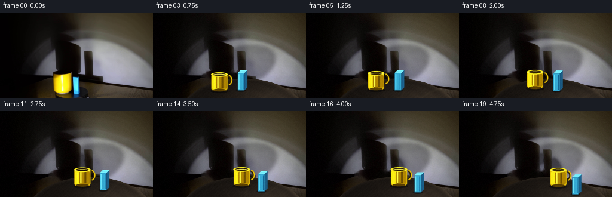
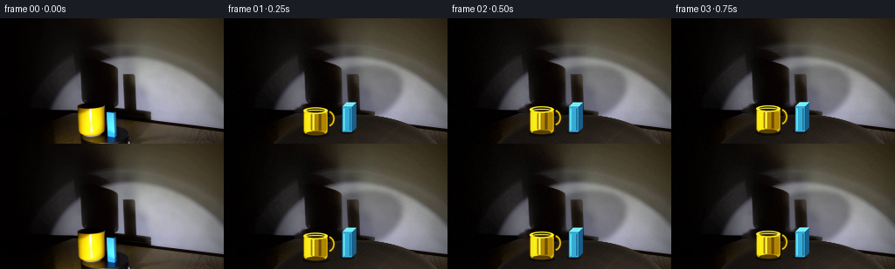
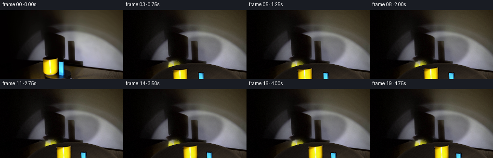
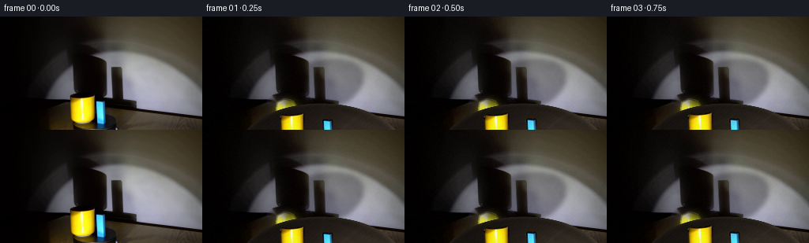
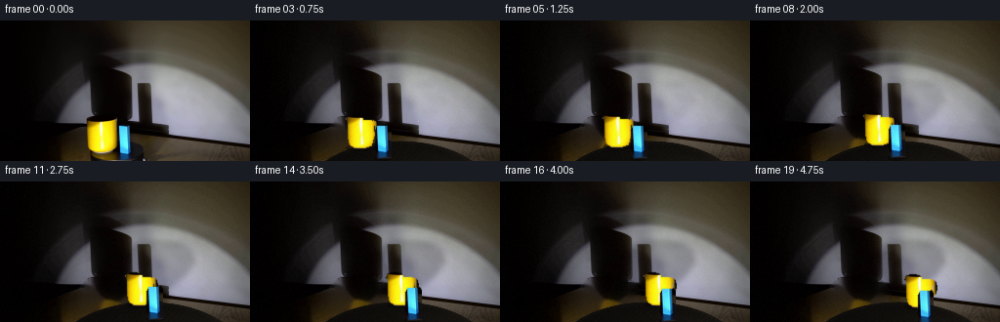
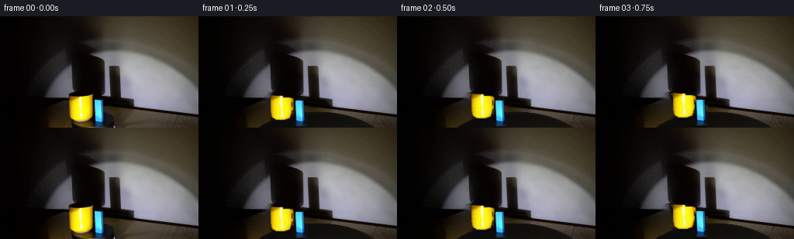
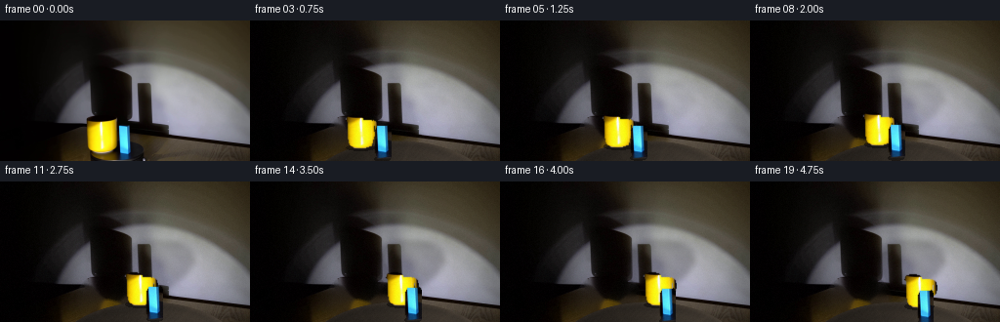
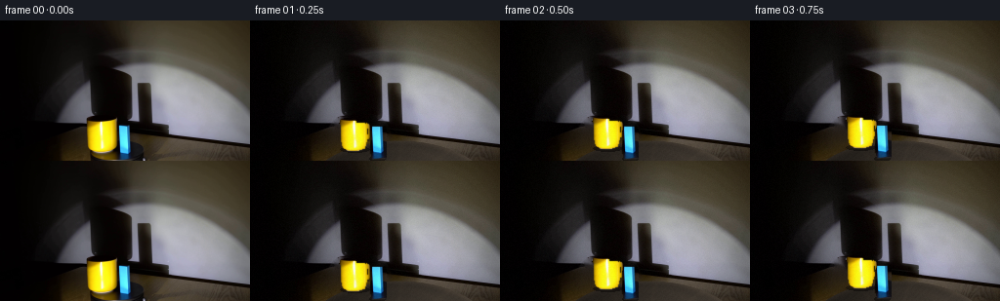

CODING AGENTS AS PIXEL WORLD MODELS
traex/DeepSeek-V4.1-Flash · 0081
点击播放 · 原生 RGB 像素
逐轮保存的候选
回放视频、检查图与代码变化。
每份候选均可单独播放。实际图片检查记录在下方工具轨迹中。
候选 01播放与检查图
点击播放 · 原生 RGB 像素


展开代码变化
--- 上一保存版本
+++ 本次保存版本
@@ -0,0 +1,367 @@
+"""Generate the rotating-platform demonstration from first_frame.png.
+
+The source frame is kept exactly as frame 00. Later frames use a cleaned
+plate from the source, a procedurally shaded turntable, and animated prop
+sprites so the clockwise rotation and wall shadow remain coherent.
+"""
+from pathlib import Path
+import math
+
+import cv2
+import numpy as np
+from PIL import Image, ImageDraw
+
+import artifact_io
+
+
+W, H = 256, 144
+N_FRAMES = 20
+FPS = 4
+
+
+def smoothstep(edge0, edge1, x):
+ t = np.clip((x - edge0) / (edge1 - edge0), 0.0, 1.0)
+ return t * t * (3.0 - 2.0 * t)
+
+
+def ellipse_alpha(cx, cy, rx, ry, xx, yy, feather=1.2):
+ q = ((xx - cx) / rx) ** 2 + ((yy - cy) / ry) ** 2
+ return smoothstep(1.0 + feather / max(rx, ry), 1.0 - feather / max(rx, ry), q)
+
+
+def rotated_ellipse_alpha(cx, cy, rx, ry, angle, xx, yy, feather=1.0):
+ ca, sa = math.cos(angle), math.sin(angle)
+ dx, dy = xx - cx, yy - cy
+ u = ca * dx + sa * dy
+ v = -sa * dx + ca * dy
+ q = (u / rx) ** 2 + (v / ry) ** 2
+ return smoothstep(1.0 + feather / max(rx, ry), 1.0 - feather / max(rx, ry), q)
+
+
+def prepare_plate(source):
+ """Remove the original props so animated props do not leave ghosts."""
+ img = source.astype(np.uint8)
+ r, g, b = [img[:, :, i].astype(np.int16) for i in range(3)]
+ yy, xx = np.mgrid[0:H, 0:W]
+
+ yellow = (r > 65) & (g > 38) & (b < 70) & (r > g * 1.04) & (g > b * 1.18)
+ blue = (b > 32) & (b > r * 1.10) & (b > g * 1.04)
+ object_zone = (xx >= 82) & (xx <= 141) & (yy >= 98) & (yy <= 143)
+ mask = ((yellow | blue) & object_zone).astype(np.uint8) * 255
+ mask = cv2.dilate(mask, np.ones((3, 3), np.uint8), iterations=2)
+
+ # The mug and block have dark rims and contact areas. Include their
+ # silhouettes, then inpaint from the surrounding wall/platform.
+ cv2.rectangle(mask, (87, 101), (121, 137), 255, -1)
+ cv2.rectangle(mask, (119, 106), (136, 143), 255, -1)
+ plate = cv2.inpaint(img, mask, 3, cv2.INPAINT_TELEA)
+
+ # The original wall has a soft shadow at the lower left. Extend that
+ # falloff into the cleaned prop zone so the plate does not reveal a hard
+ # inpaint patch when the props move.
+ blur = cv2.GaussianBlur(plate, (0, 0), 5.0).astype(np.float32)
+ patch = ellipse_alpha(111, 120, 34, 27, xx, yy, feather=2.0)[..., None]
+ plate = (plate.astype(np.float32) * (1.0 - 0.32 * patch) +
+ blur * (0.32 * patch)).clip(0, 255).astype(np.uint8)
+ return plate
+
+
+def draw_contact_shadow(draw, bx, by, rx, ry, alpha=135):
+ draw.ellipse(
+ (bx - rx, by - ry * 0.55, bx + rx, by + ry * 0.55),
+ fill=(7, 5, 4, alpha),
+ )
+
+
+def draw_mug(draw, bx, by, scale, angle):
+ s = scale
+ w = 27.0 * s
+ h = 29.0 * s
+ top = by - h
+ left = bx - w * 0.5
+ right = bx + w * 0.5
+
+ # Handle is drawn first so the body can occlude its inner edge.
+ hx = right + 1.2 * s
+ hy = top + 10.5 * s
+ hw = 7.2 * s
+ hh = 9.0 * s
+ draw.arc(
+ (hx - hw, hy - hh, hx + hw, hy + hh),
+ start=-82, end=82, fill=(49, 35, 3, 255), width=max(2, int(4.2 * s)),
+ )
+ draw.arc(
+ (hx - hw, hy - hh, hx + hw, hy + hh),
+ start=-78, end=78, fill=(218, 181, 7, 255), width=max(1, int(2.2 * s)),
+ )
+
+ body_box = (left, top, right, by - 1.0 * s)
+ draw.rounded_rectangle(
+ body_box, radius=4.0 * s, fill=(218, 180, 7, 255),
+ )
+ draw.rounded_rectangle(
+ (left + 1.0 * s, top + 3.0 * s, left + 11.0 * s, by - 3.0 * s),
+ radius=3.0 * s, fill=(253, 239, 18, 255),
+ )
+ draw.rounded_rectangle(
+ (left + 8.0 * s, top + 4.0 * s, right - 1.0 * s, by - 4.0 * s),
+ radius=3.0 * s, fill=(178, 135, 1, 255),
+ )
+ draw.rectangle(
+ (left + 10.0 * s, top + 5.0 * s, left + 12.0 * s, by - 5.0 * s),
+ fill=(255, 249, 65, 255),
+ )
+ draw.rectangle(
+ (left + 17.0 * s, top + 5.0 * s, left + 20.0 * s, by - 5.0 * s),
+ fill=(112, 80, 0, 255),
+ )
+
+ # Lip and dark opening.
+ draw.ellipse(
+ (left - 0.5 * s, top - 2.5 * s, right + 0.5 * s, top + 5.0 * s),
+ fill=(251, 233, 32, 255),
+ )
+ draw.ellipse(
+ (left + 3.0 * s, top - 1.2 * s, right - 3.0 * s, top + 3.5 * s),
+ fill=(55, 40, 2, 255),
+ )
+ draw.arc(
+ (left + 1.0 * s, top + 0.4 * s, right - 1.0 * s, top + 4.7 * s),
+ start=190, end=350, fill=(255, 251, 111, 255), width=max(1, int(1.2 * s)),
+ )
+ draw.line(
+ (left + 5.0 * s, top + 7.0 * s, left + 5.0 * s, by - 6.0 * s),
+ fill=(255, 247, 45, 255), width=max(1, int(1.2 * s)),
+ )
+ draw.ellipse(
+ (left + 3.0 * s, by - 4.0 * s, right - 3.0 * s, by + 0.5 * s),
+ fill=(91, 65, 1, 255),
+ )
+
+
+def draw_block(draw, bx, by, scale, angle):
+ s = scale
+ h = 34.0 * s
+ w = 11.0 * s
+ d = 5.0 * s
+ top = by - h
+ half = w * 0.5
+
+ # Slight width change as the block turns on the turntable.
+ turn = abs(math.cos(angle * 0.8))
+ half *= 0.82 + 0.18 * turn
+
+ front = [
+ (bx - half, top + d),
+ (bx + half, top + d),
+ (bx + half, by),
+ (bx - half, by),
+ ]
+ side = [
+ (bx + half, top + d),
+ (bx + half + d, top),
+ (bx + half + d, by - d),
+ (bx + half, by),
+ ]
+ top_face = [
+ (bx - half, top + d),
+ (bx - half + d, top),
+ (bx + half + d, top),
+ (bx + half, top + d),
+ ]
+ draw.polygon(side, fill=(27, 94, 136, 255))
+ draw.polygon(top_face, fill=(118, 238, 255, 255))
+ draw.polygon(front, fill=(54, 174, 216, 255))
+ draw.line(
+ [(bx - half + 2.0 * s, top + d + 2.0 * s),
+ (bx - half + 2.0 * s, by - 2.0 * s)],
+ fill=(110, 236, 255, 255), width=max(1, int(1.5 * s)),
+ )
+ draw.line(
+ [(bx + half - 2.0 * s, top + d + 2.0 * s),
+ (bx + half - 2.0 * s, by - 2.0 * s)],
+ fill=(20, 103, 151, 255), width=max(1, int(1.3 * s)),
+ )
+ draw.polygon(front, outline=(13, 66, 102, 255))
+
+
+def render_props(base, t, progress, theta, positions):
+ """Draw the two props, including their contact shadows."""
+ scale_factor = 4
+ overlay = Image.new("RGBA", (W * scale_factor, H * scale_factor), (0, 0, 0, 0))
+ draw = ImageDraw.Draw(overlay)
+ mug, block = positions
+
+ # Contact shadows first.
+ for (bx, by), rx, ry in ((mug, 15.0, 6.0), (block, 8.0, 4.5)):
+ draw_contact_shadow(
+ draw,
+ bx * scale_factor,
+ by * scale_factor,
+ rx * scale_factor,
+ ry * scale_factor,
+ alpha=125,
+ )
+
+ # Depth ordering follows the base point on the platform.
+ items = [
+ ("mug", mug, draw_mug),
+ ("block", block, draw_block),
+ ]
+ items.sort(key=lambda item: item[1][1])
+ for name, (bx, by), fn in items:
+ s = (1.0 - 0.055 * max(0.0, (by - 135.0) / 15.0)) * scale_factor
+ if name == "mug":
+ fn(draw, bx * scale_factor, by * scale_factor, s, theta)
+ else:
+ fn(draw, bx * scale_factor, by * scale_factor, s, theta)
+
+ overlay = overlay.resize((W, H), Image.Resampling.LANCZOS)
+ return np.asarray(overlay).astype(np.float32) / 255.0, base
+
+
+def composite_over(base, rgba):
+ alpha = rgba[:, :, 3:4]
+ return base * (1.0 - alpha) + rgba[:, :, :3] * 255.0 * alpha
+
+
+def draw_platform(base, theta, xx, yy):
+ cx, cy = 150.0, 170.0
+ rx, ry = 105.0, 60.0
+ mask = ellipse_alpha(cx, cy, rx, ry, xx, yy, feather=1.4)
+
+ u = (xx - cx) / rx
+ v = (yy - cy) / ry
+ r = np.sqrt(u * u + v * v)
+ ang = np.arctan2(v, u)
+
+ light = (
+ 0.18
+ + 0.62 * np.exp(-(((u - 0.47) / 0.68) ** 2 + ((v + 0.33) / 0.52) ** 2))
+ + 0.10 * np.clip((v + 1.0) * 0.5, 0.0, 1.0)
+ )
+ light = np.clip(light, 0.0, 1.0)
+
+ # Brushed turntable surface. The pattern is tied to theta, making the
+ # clockwise platform rotation visible even though the disc is dark.
+ phase = ang - theta
+ spokes = np.maximum(0.0, np.cos(12.0 * phase + 0.45 * np.sin(3.0 * r))) ** 14
+ rings = 0.5 + 0.5 * np.cos(31.0 * r + 1.3 * np.sin(5.0 * phase))
+ grain = (0.5 + 0.5 * np.sin(97.0 * u + 61.0 * v + 2.0 * theta))
+
+ color = np.empty((H, W, 3), np.float32)
+ color[:, :, 0] = 15.0 + 48.0 * light + 7.0 * spokes * light + 2.0 * grain
+ color[:, :, 1] = 12.0 + 41.0 * light + 6.0 * spokes * light + 2.0 * grain
+ color[:, :, 2] = 10.0 + 33.0 * light + 4.0 * spokes * light + 2.0 * grain
+ color[:, :, 0] += 5.0 * rings * light
+ color[:, :, 1] += 4.0 * rings * light
+ color[:, :, 2] += 3.0 * rings * light
+
+ rim = np.exp(-((1.0 - r) / 0.045) ** 2) * np.clip(0.25 + 0.75 * light, 0.0, 1.0)
+ color[:, :, 0] += 32.0 * rim
+ color[:, :, 1] += 27.0 * rim
+ color[:, :, 2] += 20.0 * rim
+
+ # Slight occlusion at the near-left edge.
+ color *= (0.78 + 0.22 * np.clip((u + 1.0) * 0.5, 0.0, 1.0))[:, :, None]
+ color = np.clip(color, 0.0, 255.0)
+ return base * (1.0 - mask[..., None]) + color * mask[..., None]
+
+
+def shadow_layer(base, theta, positions, xx, yy):
+ """Move large platform and prop shadows over the illuminated wall."""
+ luma = base.mean(axis=2)
+ wall = smoothstep(38.0, 105.0, luma) * smoothstep(126.0, 103.0, yy)
+ wall *= smoothstep(82.0, 118.0, xx)
+
+ mug, block = positions
+ shadow = np.zeros((H, W), np.float32)
+
+ # Broad shadow of the platform, slowly swinging with the turntable.
+ scx = 137.0 + 9.0 * math.sin(theta + 0.7)
+ scy = 88.0 + 3.0 * math.cos(theta)
+ shadow += 0.34 * rotated_ellipse_alpha(
+ scx, scy, 64.0, 34.0, -0.32, xx, yy, feather=9.0
+ )
+
+ # Prop shadows projected up and left by the spotlight.
+ for (bx, by), rx, ry, shear in (
+ (mug, 14.0, 9.0, 0.35),
+ (block, 7.5, 17.0, 0.22),
+ ):
+ cx = bx - 33.0 + (by - 130.0) * 0.12
+ cy = by - 46.0
+ local = rotated_ellipse_alpha(
+ cx, cy, rx, ry, -0.42, xx, yy, feather=4.0
+ )
+ shadow += 0.43 * local
+
+ shadow = cv2.GaussianBlur(shadow, (0, 0), 2.6)
+ alpha = np.clip(shadow * wall, 0.0, 0.62)
+ shadow_color = np.array([8.0, 6.0, 6.0], np.float32)
+ return base * (1.0 - alpha[..., None]) + shadow_color * alpha[..., None]
+
+
+def add_finishing(frame, t, rng):
+ frame = np.clip(frame, 0.0, 255.0)
+
+ # Match the source's restrained film grain without introducing temporal
+ # color pumping.
+ grain = rng.normal(0.0, 1.15, (H, W, 1)).astype(np.float32)
+ tint = rng.normal(0.0, 0.35, (H, W, 3)).astype(np.float32)
+ frame = frame + grain + tint
+
+ # Very slight lens falloff; the original frame already has strong vignette.
+ yy, xx = np.mgrid[0:H, 0:W]
+ nx = (xx - W * 0.53) / (W * 0.62)
+ ny = (yy - H * 0.52) / (H * 0.70)
+ vig = np.clip(1.0 - 0.075 * (nx * nx + ny * ny), 0.90, 1.0)
+ frame *= vig[..., None]
+ return np.clip(np.rint(frame), 0, 255).astype(np.uint8)
+
+
+def main():
+ case_dir = Path(__file__).resolve().parent
+ source = np.asarray(Image.open(case_dir / "first_frame.png").convert("RGB"))
+ assert source.shape == (H, W, 3)
+
+ plate = prepare_plate(source)
+ yy, xx = np.mgrid[0:H, 0:W]
+ frames = [source.copy()]
+
+ cx, cy = 150.0, 170.0
+ rx, ry = 105.0, 60.0
+ mug_r, mug_a = 0.74, math.radians(-128.0)
+ block_r, block_a = 0.66, math.radians(-100.0)
+
+ for t in range(1, N_FRAMES):
+ progress = t / (N_FRAMES - 1)
+ theta = math.radians(50.0) * progress
+ mug_a_t = mug_a + theta
+ block_a_t = block_a + theta
+ mug = (
+ cx + rx * mug_r * math.cos(mug_a_t),
+ cy + ry * mug_r * math.sin(mug_a_t),
+ )
+ block = (
+ cx + rx * block_r * math.cos(block_a_t),
+ cy + ry * block_r * math.sin(block_a_t),
+ )
+ positions = (mug, block)
+
+ frame = plate.astype(np.float32)
+ frame = shadow_layer(frame, theta, positions, xx, yy)
+ frame = draw_platform(frame, theta, xx, yy)
+ rgba, frame = render_props(frame, t, progress, theta, positions)
+ frame = composite_over(frame, rgba)
+ frame = add_finishing(frame, t, np.random.default_rng(4100 + t))
+ frames.append(frame)
+
+ frames = np.stack(frames, axis=0)
+ assert np.array_equal(frames[0], source)
+ artifact_io.save(frames, case_dir)
+ return frames
+
+
+if __name__ == "__main__":
+ main()
候选 02播放与检查图
点击播放 · 原生 RGB 像素


展开代码变化
--- 上一保存版本
+++ 本次保存版本
@@ -46,14 +46,11 @@
yellow = (r > 65) & (g > 38) & (b < 70) & (r > g * 1.04) & (g > b * 1.18)
blue = (b > 32) & (b > r * 1.10) & (b > g * 1.04)
- object_zone = (xx >= 82) & (xx <= 141) & (yy >= 98) & (yy <= 143)
- mask = ((yellow | blue) & object_zone).astype(np.uint8) * 255
+ mug_zone = (xx >= 84) & (xx <= 121) & (yy >= 98) & (yy <= 138)
+ block_zone = (xx >= 120) & (xx <= 137) & (yy >= 103) & (yy <= 143)
+ mask = (((yellow & mug_zone) | (blue & block_zone)) * 255).astype(np.uint8)
+ mask = cv2.morphologyEx(mask, cv2.MORPH_CLOSE, np.ones((5, 5), np.uint8))
mask = cv2.dilate(mask, np.ones((3, 3), np.uint8), iterations=2)
-
- # The mug and block have dark rims and contact areas. Include their
- # silhouettes, then inpaint from the surrounding wall/platform.
- cv2.rectangle(mask, (87, 101), (121, 137), 255, -1)
- cv2.rectangle(mask, (119, 106), (136, 143), 255, -1)
plate = cv2.inpaint(img, mask, 3, cv2.INPAINT_TELEA)
# The original wall has a soft shadow at the lower left. Extend that
@@ -64,6 +61,42 @@
plate = (plate.astype(np.float32) * (1.0 - 0.32 * patch) +
blur * (0.32 * patch)).clip(0, 255).astype(np.uint8)
return plate
+
+
+def fill_mask_holes(mask):
+ h, w = mask.shape
+ flood = mask.copy()
+ cv2.floodFill(flood, np.zeros((h + 2, w + 2), np.uint8), (0, 0), 255)
+ holes = cv2.bitwise_not(flood)
+ return cv2.bitwise_or(mask, holes)
+
+
+def extract_sprite(source, color_mask, zone, grow=1):
+ mask = (color_mask & zone).astype(np.uint8) * 255
+ mask = cv2.morphologyEx(mask, cv2.MORPH_CLOSE, np.ones((3, 3), np.uint8))
+ mask = fill_mask_holes(mask)
+ mask = cv2.dilate(mask, np.ones((3, 3), np.uint8), iterations=grow)
+
+ ys, xs = np.where(mask > 0)
+ x0, x1 = max(0, xs.min() - 1), min(W - 1, xs.max() + 1)
+ y0, y1 = max(0, ys.min() - 1), min(H - 1, ys.max() + 1)
+ rgb = source[y0:y1 + 1, x0:x1 + 1].copy()
+ alpha = mask[y0:y1 + 1, x0:x1 + 1].copy()
+ alpha = cv2.GaussianBlur(alpha, (3, 3), 0.55)
+ rgba = np.dstack((rgb, alpha))
+ return Image.fromarray(rgba, "RGBA"), (x0, y0)
+
+
+def source_sprites(source):
+ r, g, b = [source[:, :, i].astype(np.int16) for i in range(3)]
+ yy, xx = np.mgrid[0:H, 0:W]
+ yellow = (r > 65) & (g > 38) & (b < 70) & (r > g * 1.04) & (g > b * 1.18)
+ blue = (b > 32) & (b > r * 1.10) & (b > g * 1.04)
+ mug_zone = (xx >= 84) & (xx <= 121) & (yy >= 98) & (yy <= 138)
+ block_zone = (xx >= 120) & (xx <= 137) & (yy >= 103) & (yy <= 143)
+ mug, mug_origin = extract_sprite(source, yellow, mug_zone, grow=1)
+ block, block_origin = extract_sprite(source, blue, block_zone, grow=1)
+ return (mug, mug_origin), (block, block_origin)
def draw_contact_shadow(draw, bx, by, rx, ry, alpha=135):
@@ -185,38 +218,49 @@
draw.polygon(front, outline=(13, 66, 102, 255))
-def render_props(base, t, progress, theta, positions):
- """Draw the two props, including their contact shadows."""
- scale_factor = 4
- overlay = Image.new("RGBA", (W * scale_factor, H * scale_factor), (0, 0, 0, 0))
- draw = ImageDraw.Draw(overlay)
+def paste_sprite(overlay, sprite, center, source_origin, scale):
+ sw, sh = sprite.size
+ ox, oy = source_origin
+ # The extracted crop is anchored by the source object's base center.
+ anchor_x = 104.0 - ox
+ anchor_y = 134.0 - oy
+ new_size = (max(1, round(sw * scale)), max(1, round(sh * scale)))
+ scaled = sprite.resize(new_size, Image.Resampling.LANCZOS)
+ left = round(center[0] - anchor_x * scale)
+ top = round(center[1] - anchor_y * scale)
+ overlay.alpha_composite(scaled, (left, top))
+
+
+def render_props(base, t, progress, theta, positions, sprites):
+ """Composite the two source-derived props and their contact shadows."""
+ overlay = Image.new("RGBA", (W, H), (0, 0, 0, 0))
+ shadow = Image.new("RGBA", (W, H), (0, 0, 0, 0))
+ draw = ImageDraw.Draw(shadow)
mug, block = positions
# Contact shadows first.
for (bx, by), rx, ry in ((mug, 15.0, 6.0), (block, 8.0, 4.5)):
draw_contact_shadow(
draw,
- bx * scale_factor,
- by * scale_factor,
- rx * scale_factor,
- ry * scale_factor,
+ bx,
+ by,
+ rx,
+ ry,
alpha=125,
)
+ overlay.alpha_composite(shadow)
+
# Depth ordering follows the base point on the platform.
items = [
- ("mug", mug, draw_mug),
- ("block", block, draw_block),
+ ("mug", mug, sprites[0]),
+ ("block", block, sprites[1]),
]
items.sort(key=lambda item: item[1][1])
- for name, (bx, by), fn in items:
- s = (1.0 - 0.055 * max(0.0, (by - 135.0) / 15.0)) * scale_factor
- if name == "mug":
- fn(draw, bx * scale_factor, by * scale_factor, s, theta)
- else:
- fn(draw, bx * scale_factor, by * scale_factor, s, theta)
-
- overlay = overlay.resize((W, H), Image.Resampling.LANCZOS)
+ for name, (bx, by), (sprite, origin) in items:
+ scale = 1.0 - 0.055 * max(0.0, (by - 135.0) / 15.0)
+ paste_sprite(overlay, sprite, (bx, by), origin, scale)
+
return np.asarray(overlay).astype(np.float32) / 255.0, base
@@ -326,17 +370,18 @@
assert source.shape == (H, W, 3)
plate = prepare_plate(source)
+ sprites = source_sprites(source)
yy, xx = np.mgrid[0:H, 0:W]
frames = [source.copy()]
- cx, cy = 150.0, 170.0
- rx, ry = 105.0, 60.0
- mug_r, mug_a = 0.74, math.radians(-128.0)
- block_r, block_a = 0.66, math.radians(-100.0)
+ cx, cy = 145.0, 174.0
+ rx, ry = 84.0, 43.0
+ mug_r, mug_a = 0.58, math.radians(-132.0)
+ block_r, block_a = 0.42, math.radians(-105.0)
for t in range(1, N_FRAMES):
progress = t / (N_FRAMES - 1)
- theta = math.radians(50.0) * progress
+ theta = math.radians(47.0) * progress
mug_a_t = mug_a + theta
block_a_t = block_a + theta
mug = (
@@ -352,7 +397,7 @@
frame = plate.astype(np.float32)
frame = shadow_layer(frame, theta, positions, xx, yy)
frame = draw_platform(frame, theta, xx, yy)
- rgba, frame = render_props(frame, t, progress, theta, positions)
+ rgba, frame = render_props(frame, t, progress, theta, positions, sprites)
frame = composite_over(frame, rgba)
frame = add_finishing(frame, t, np.random.default_rng(4100 + t))
frames.append(frame)
候选 03播放与检查图
点击播放 · 原生 RGB 像素
展开代码变化
--- 上一保存版本
+++ 本次保存版本
@@ -88,15 +88,40 @@
def source_sprites(source):
- r, g, b = [source[:, :, i].astype(np.int16) for i in range(3)]
- yy, xx = np.mgrid[0:H, 0:W]
- yellow = (r > 65) & (g > 38) & (b < 70) & (r > g * 1.04) & (g > b * 1.18)
- blue = (b > 32) & (b > r * 1.10) & (b > g * 1.04)
- mug_zone = (xx >= 84) & (xx <= 121) & (yy >= 98) & (yy <= 138)
- block_zone = (xx >= 120) & (xx <= 137) & (yy >= 103) & (yy <= 143)
- mug, mug_origin = extract_sprite(source, yellow, mug_zone, grow=1)
- block, block_origin = extract_sprite(source, blue, block_zone, grow=1)
- return (mug, mug_origin), (block, block_origin)
+ """Extract the photographed props with hand-fit silhouette alpha masks."""
+ mug_box = (85, 98, 124, 138)
+ block_box = (119, 105, 137, 144)
+
+ mug_crop = source[mug_box[1]:mug_box[3], mug_box[0]:mug_box[2]].copy()
+ mug_mask = Image.new("L", (mug_crop.shape[1], mug_crop.shape[0]), 0)
+ md = ImageDraw.Draw(mug_mask)
+ # Body silhouette, including the lip, base, and the small side handle.
+ md.polygon(
+ [(5, 8), (19, 7), (29, 8), (31, 11), (31, 25),
+ (29, 34), (23, 36), (11, 36), (7, 33), (5, 26)],
+ fill=255,
+ )
+ md.ellipse((3, 3, 20, 11), fill=255)
+ md.arc((24, 8, 36, 25), start=-85, end=85, fill=255, width=4)
+ mug_mask = np.asarray(mug_mask)
+ mug_mask = cv2.GaussianBlur(mug_mask, (3, 3), 0.55)
+ mug = Image.fromarray(np.dstack((mug_crop, mug_mask)), "RGBA")
+
+ block_crop = source[block_box[1]:block_box[3], block_box[0]:block_box[2]].copy()
+ block_mask = Image.new("L", (block_crop.shape[1], block_crop.shape[0]), 0)
+ bd = ImageDraw.Draw(block_mask)
+ bd.polygon(
+ [(3, 4), (15, 3), (18, 7), (18, 37), (3, 37), (1, 31), (1, 9)],
+ fill=255,
+ )
+ block_mask = np.asarray(block_mask)
+ block_mask = cv2.GaussianBlur(block_mask, (3, 3), 0.5)
+ block = Image.fromarray(np.dstack((block_crop, block_mask)), "RGBA")
+
+ return (
+ (mug, mug_box[:2], (104.0, 134.0)),
+ (block, block_box[:2], (128.0, 143.0)),
+ )
def draw_contact_shadow(draw, bx, by, rx, ry, alpha=135):
@@ -218,12 +243,11 @@
draw.polygon(front, outline=(13, 66, 102, 255))
-def paste_sprite(overlay, sprite, center, source_origin, scale):
+def paste_sprite(overlay, sprite, center, source_origin, source_anchor, scale):
sw, sh = sprite.size
ox, oy = source_origin
- # The extracted crop is anchored by the source object's base center.
- anchor_x = 104.0 - ox
- anchor_y = 134.0 - oy
+ anchor_x = source_anchor[0] - ox
+ anchor_y = source_anchor[1] - oy
new_size = (max(1, round(sw * scale)), max(1, round(sh * scale)))
scaled = sprite.resize(new_size, Image.Resampling.LANCZOS)
left = round(center[0] - anchor_x * scale)
@@ -257,9 +281,9 @@
("block", block, sprites[1]),
]
items.sort(key=lambda item: item[1][1])
- for name, (bx, by), (sprite, origin) in items:
+ for name, (bx, by), (sprite, origin, anchor) in items:
scale = 1.0 - 0.055 * max(0.0, (by - 135.0) / 15.0)
- paste_sprite(overlay, sprite, (bx, by), origin, scale)
+ paste_sprite(overlay, sprite, (bx, by), origin, anchor, scale)
return np.asarray(overlay).astype(np.float32) / 255.0, base
@@ -374,10 +398,10 @@
yy, xx = np.mgrid[0:H, 0:W]
frames = [source.copy()]
- cx, cy = 145.0, 174.0
- rx, ry = 84.0, 43.0
- mug_r, mug_a = 0.58, math.radians(-132.0)
- block_r, block_a = 0.42, math.radians(-105.0)
+ cx, cy = 150.0, 180.0
+ rx, ry = 90.0, 55.0
+ mug_r, mug_a = 0.986, math.radians(-121.4)
+ block_r, block_a = 0.716, math.radians(-110.0)
for t in range(1, N_FRAMES):
progress = t / (N_FRAMES - 1)
候选 04播放与检查图
候选 05播放与检查图
点击播放 · 原生 RGB 像素


展开代码变化
--- 上一保存版本
+++ 本次保存版本
@@ -46,9 +46,23 @@
yellow = (r > 65) & (g > 38) & (b < 70) & (r > g * 1.04) & (g > b * 1.18)
blue = (b > 32) & (b > r * 1.10) & (b > g * 1.04)
- mug_zone = (xx >= 84) & (xx <= 121) & (yy >= 98) & (yy <= 138)
- block_zone = (xx >= 120) & (xx <= 137) & (yy >= 103) & (yy <= 143)
+ mug_zone = (xx >= 84) & (xx <= 124) & (yy >= 98) & (yy <= 138)
+ block_zone = (xx >= 119) & (xx <= 137) & (yy >= 104) & (yy <= 143)
mask = (((yellow & mug_zone) | (blue & block_zone)) * 255).astype(np.uint8)
+ mask_img = Image.fromarray(mask)
+ md = ImageDraw.Draw(mask_img)
+ md.polygon(
+ [(90, 106), (104, 104), (114, 105), (116, 108), (116, 122),
+ (114, 131), (108, 133), (96, 133), (92, 130), (90, 123)],
+ fill=255,
+ )
+ md.ellipse((88, 101, 105, 109), fill=255)
+ md.arc((109, 106, 121, 123), start=-85, end=85, fill=255, width=4)
+ md.polygon(
+ [(122, 109), (134, 108), (137, 112), (137, 142), (122, 142), (120, 136)],
+ fill=255,
+ )
+ mask = np.asarray(mask_img)
mask = cv2.morphologyEx(mask, cv2.MORPH_CLOSE, np.ones((5, 5), np.uint8))
mask = cv2.dilate(mask, np.ones((3, 3), np.uint8), iterations=2)
plate = cv2.inpaint(img, mask, 3, cv2.INPAINT_TELEA)
@@ -294,8 +308,8 @@
def draw_platform(base, theta, xx, yy):
- cx, cy = 150.0, 170.0
- rx, ry = 105.0, 60.0
+ cx, cy = 152.0, 181.0
+ rx, ry = 99.0, 58.0
mask = ellipse_alpha(cx, cy, rx, ry, xx, yy, feather=1.4)
u = (xx - cx) / rx
@@ -304,9 +318,9 @@
ang = np.arctan2(v, u)
light = (
- 0.18
- + 0.62 * np.exp(-(((u - 0.47) / 0.68) ** 2 + ((v + 0.33) / 0.52) ** 2))
- + 0.10 * np.clip((v + 1.0) * 0.5, 0.0, 1.0)
+ 0.08
+ + 0.27 * np.exp(-(((u - 0.44) / 0.72) ** 2 + ((v + 0.25) / 0.54) ** 2))
+ + 0.04 * np.clip((v + 1.0) * 0.5, 0.0, 1.0)
)
light = np.clip(light, 0.0, 1.0)
@@ -318,29 +332,36 @@
grain = (0.5 + 0.5 * np.sin(97.0 * u + 61.0 * v + 2.0 * theta))
color = np.empty((H, W, 3), np.float32)
- color[:, :, 0] = 15.0 + 48.0 * light + 7.0 * spokes * light + 2.0 * grain
- color[:, :, 1] = 12.0 + 41.0 * light + 6.0 * spokes * light + 2.0 * grain
- color[:, :, 2] = 10.0 + 33.0 * light + 4.0 * spokes * light + 2.0 * grain
- color[:, :, 0] += 5.0 * rings * light
- color[:, :, 1] += 4.0 * rings * light
- color[:, :, 2] += 3.0 * rings * light
+ color[:, :, 0] = 10.0 + 52.0 * light + 5.0 * spokes * light + 1.5 * grain
+ color[:, :, 1] = 9.0 + 45.0 * light + 4.0 * spokes * light + 1.5 * grain
+ color[:, :, 2] = 7.0 + 37.0 * light + 3.0 * spokes * light + 1.5 * grain
+ color[:, :, 0] += 4.0 * rings * light
+ color[:, :, 1] += 3.0 * rings * light
+ color[:, :, 2] += 2.0 * rings * light
rim = np.exp(-((1.0 - r) / 0.045) ** 2) * np.clip(0.25 + 0.75 * light, 0.0, 1.0)
- color[:, :, 0] += 32.0 * rim
- color[:, :, 1] += 27.0 * rim
- color[:, :, 2] += 20.0 * rim
+ color[:, :, 0] += 17.0 * rim
+ color[:, :, 1] += 14.0 * rim
+ color[:, :, 2] += 11.0 * rim
# Slight occlusion at the near-left edge.
- color *= (0.78 + 0.22 * np.clip((u + 1.0) * 0.5, 0.0, 1.0))[:, :, None]
+ color *= (0.72 + 0.28 * np.clip((u + 1.0) * 0.5, 0.0, 1.0))[:, :, None]
color = np.clip(color, 0.0, 255.0)
return base * (1.0 - mask[..., None]) + color * mask[..., None]
-def shadow_layer(base, theta, positions, xx, yy):
+def shadow_layer(base, theta, progress, positions, xx, yy):
"""Move large platform and prop shadows over the illuminated wall."""
luma = base.mean(axis=2)
- wall = smoothstep(38.0, 105.0, luma) * smoothstep(126.0, 103.0, yy)
- wall *= smoothstep(82.0, 118.0, xx)
+ wall = smoothstep(35.0, 105.0, luma)
+ # The source's illuminated wall is a right-facing trapezoid. Keep the
+ # shadow projection on that surface and off the turntable.
+ left_edge = 94.0 + 0.17 * (yy - 43.0)
+ right_edge = 257.0
+ wall *= smoothstep(left_edge - 8.0, left_edge + 5.0, xx)
+ wall *= smoothstep(right_edge + 4.0, right_edge - 8.0, xx)
+ wall *= smoothstep(127.0, 105.0, yy)
+ wall *= smoothstep(36.0, 43.0, yy)
mug, block = positions
shadow = np.zeros((H, W), np.float32)
@@ -348,8 +369,8 @@
# Broad shadow of the platform, slowly swinging with the turntable.
scx = 137.0 + 9.0 * math.sin(theta + 0.7)
scy = 88.0 + 3.0 * math.cos(theta)
- shadow += 0.34 * rotated_ellipse_alpha(
- scx, scy, 64.0, 34.0, -0.32, xx, yy, feather=9.0
+ shadow += 0.23 * rotated_ellipse_alpha(
+ scx, scy, 55.0, 28.0, -0.32, xx, yy, feather=9.0
)
# Prop shadows projected up and left by the spotlight.
@@ -362,10 +383,13 @@
local = rotated_ellipse_alpha(
cx, cy, rx, ry, -0.42, xx, yy, feather=4.0
)
- shadow += 0.43 * local
+ shadow += 0.30 * local
shadow = cv2.GaussianBlur(shadow, (0, 0), 2.6)
- alpha = np.clip(shadow * wall, 0.0, 0.62)
+ # The source plate already carries the original shadow. The procedural
+ # layer therefore starts at zero and introduces only the moving part.
+ ramp = smoothstep(0.0, 0.75, progress)
+ alpha = np.clip(shadow * wall * ramp, 0.0, 0.34)
shadow_color = np.array([8.0, 6.0, 6.0], np.float32)
return base * (1.0 - alpha[..., None]) + shadow_color * alpha[..., None]
@@ -419,7 +443,7 @@
positions = (mug, block)
frame = plate.astype(np.float32)
- frame = shadow_layer(frame, theta, positions, xx, yy)
+ frame = shadow_layer(frame, theta, progress, positions, xx, yy)
frame = draw_platform(frame, theta, xx, yy)
rgba, frame = render_props(frame, t, progress, theta, positions, sprites)
frame = composite_over(frame, rgba)
候选 06播放与检查图
点击播放 · 原生 RGB 像素
展开代码变化
--- 上一保存版本
+++ 本次保存版本
@@ -318,8 +318,8 @@
ang = np.arctan2(v, u)
light = (
- 0.08
- + 0.27 * np.exp(-(((u - 0.44) / 0.72) ** 2 + ((v + 0.25) / 0.54) ** 2))
+ 0.43
+ + 0.30 * np.exp(-(((u - 0.40) / 0.72) ** 2 + ((v + 0.55) / 0.56) ** 2))
+ 0.04 * np.clip((v + 1.0) * 0.5, 0.0, 1.0)
)
light = np.clip(light, 0.0, 1.0)
@@ -332,9 +332,9 @@
grain = (0.5 + 0.5 * np.sin(97.0 * u + 61.0 * v + 2.0 * theta))
color = np.empty((H, W, 3), np.float32)
- color[:, :, 0] = 10.0 + 52.0 * light + 5.0 * spokes * light + 1.5 * grain
- color[:, :, 1] = 9.0 + 45.0 * light + 4.0 * spokes * light + 1.5 * grain
- color[:, :, 2] = 7.0 + 37.0 * light + 3.0 * spokes * light + 1.5 * grain
+ color[:, :, 0] = 5.0 + 84.0 * light + 5.0 * spokes * light + 1.5 * grain
+ color[:, :, 1] = 4.0 + 75.0 * light + 4.0 * spokes * light + 1.5 * grain
+ color[:, :, 2] = 3.0 + 65.0 * light + 3.0 * spokes * light + 1.5 * grain
color[:, :, 0] += 4.0 * rings * light
color[:, :, 1] += 3.0 * rings * light
color[:, :, 2] += 2.0 * rings * light
候选 07播放与检查图
点击播放 · 原生 RGB 像素

展开代码变化
代码未变化；重新保存了产物。
候选 08播放与检查图
点击播放 · 原生 RGB 像素


展开代码变化
--- 上一保存版本
+++ 本次保存版本
@@ -65,15 +65,15 @@
mask = np.asarray(mask_img)
mask = cv2.morphologyEx(mask, cv2.MORPH_CLOSE, np.ones((5, 5), np.uint8))
mask = cv2.dilate(mask, np.ones((3, 3), np.uint8), iterations=2)
- plate = cv2.inpaint(img, mask, 3, cv2.INPAINT_TELEA)
+ plate = cv2.inpaint(img, mask, 4, cv2.INPAINT_NS)
# The original wall has a soft shadow at the lower left. Extend that
# falloff into the cleaned prop zone so the plate does not reveal a hard
# inpaint patch when the props move.
blur = cv2.GaussianBlur(plate, (0, 0), 5.0).astype(np.float32)
- patch = ellipse_alpha(111, 120, 34, 27, xx, yy, feather=2.0)[..., None]
- plate = (plate.astype(np.float32) * (1.0 - 0.32 * patch) +
- blur * (0.32 * patch)).clip(0, 255).astype(np.uint8)
+ patch = ellipse_alpha(111, 120, 39, 29, xx, yy, feather=2.0)[..., None]
+ plate = (plate.astype(np.float32) * (1.0 - 0.18 * patch) +
+ blur * (0.18 * patch)).clip(0, 255).astype(np.uint8)
return plate
@@ -119,7 +119,7 @@
md.arc((24, 8, 36, 25), start=-85, end=85, fill=255, width=4)
mug_mask = np.asarray(mug_mask)
mug_mask = cv2.GaussianBlur(mug_mask, (3, 3), 0.55)
- mug = Image.fromarray(np.dstack((mug_crop, mug_mask)), "RGBA")
+ mug = Image.fromarray(np.dstack((mug_crop, mug_mask)))
block_crop = source[block_box[1]:block_box[3], block_box[0]:block_box[2]].copy()
block_mask = Image.new("L", (block_crop.shape[1], block_crop.shape[0]), 0)
@@ -130,7 +130,7 @@
)
block_mask = np.asarray(block_mask)
block_mask = cv2.GaussianBlur(block_mask, (3, 3), 0.5)
- block = Image.fromarray(np.dstack((block_crop, block_mask)), "RGBA")
+ block = Image.fromarray(np.dstack((block_crop, block_mask)))
return (
(mug, mug_box[:2], (104.0, 134.0)),
@@ -332,9 +332,9 @@
grain = (0.5 + 0.5 * np.sin(97.0 * u + 61.0 * v + 2.0 * theta))
color = np.empty((H, W, 3), np.float32)
- color[:, :, 0] = 5.0 + 84.0 * light + 5.0 * spokes * light + 1.5 * grain
- color[:, :, 1] = 4.0 + 75.0 * light + 4.0 * spokes * light + 1.5 * grain
- color[:, :, 2] = 3.0 + 65.0 * light + 3.0 * spokes * light + 1.5 * grain
+ color[:, :, 0] = 5.0 + 95.0 * light + 5.0 * spokes * light + 1.5 * grain
+ color[:, :, 1] = 4.0 + 84.0 * light + 4.0 * spokes * light + 1.5 * grain
+ color[:, :, 2] = 3.0 + 74.0 * light + 3.0 * spokes * light + 1.5 * grain
color[:, :, 0] += 4.0 * rings * light
color[:, :, 1] += 3.0 * rings * light
color[:, :, 2] += 2.0 * rings * light
候选 09播放与检查图
候选 10播放与检查图
点击播放 · 原生 RGB 像素
展开代码变化
--- 上一保存版本
+++ 本次保存版本
@@ -347,7 +347,14 @@
# Slight occlusion at the near-left edge.
color *= (0.72 + 0.28 * np.clip((u + 1.0) * 0.5, 0.0, 1.0))[:, :, None]
color = np.clip(color, 0.0, 255.0)
- return base * (1.0 - mask[..., None]) + color * mask[..., None]
+ result = base * (1.0 - mask[..., None]) + color * mask[..., None]
+
+ # Remove the last low-saturation inpaint remnant around the original
+ # mug base. This lies on the disc and is part of the rotating surface.
+ remnant = ellipse_alpha(113, 126, 19, 7, xx, yy, feather=2.5)[..., None]
+ local = cv2.GaussianBlur(result, (0, 0), 3.0)
+ result = result * (1.0 - 0.72 * remnant) + local * (0.72 * remnant)
+ return result
def shadow_layer(base, theta, progress, positions, xx, yy):
候选 11播放与检查图
可观测工具轨迹
实际执行的命令与返回图片。
命令 1exit 0
/bin/bash -c "pwd && rg --files -g 'prompt.txt' -g 'GENERATION_RULES.md' -g 'first_frame.png' -g '"'!*.mp4'"'"
命令 2exit 0
/bin/bash -c 'git status --short'
命令 3exit 0
/bin/bash -c "sed -n '1,240p' prompt.txt"
命令 4exit 0
/bin/bash -c "sed -n '1,320p' GENERATION_RULES.md"
命令 5exit 0
/bin/bash -c 'file first_frame.png && identify first_frame.png 2>/dev/null || true && du -h first_frame.png'
命令 6exit 0
/bin/bash -c "rg --files -g 'artifact_io.py' -g '*.py' | head -80"
命令 7exit 0
/bin/bash -c "python - <<'PY'
from PIL import Image
im=Image.open('first_frame.png')
print(im.mode, im.size)
print(im.getbbox())
print(im.getextrema())
PY"命令 8exit 0
/bin/bash -c "find . -maxdepth 3 -type f -printf '%p\\n' | sort | head -120"
命令 9exit 0
/bin/bash -c "sed -n '1,320p' artifact_io.py"
命令 10exit 0
/bin/bash -c "python - <<'PY'
from PIL import Image
import numpy as np
im=np.array(Image.open('first_frame.png'))
print('shape', im.shape)
# exact top colors
u,c=np.unique(im.reshape(-1,3),axis=0,return_counts=True)
ix=np.argsort(c)[::-1][:40]
for i in ix:
print(tuple(u[i]),int(c[i]))
PY"命令 11exit 0
/bin/bash -c "python - <<'PY'
from PIL import Image
import numpy as np
im=np.asarray(Image.open('first_frame.png')).astype(float)
g=im.mean(2)
# 128x72 ascii blocks avg brightness
h,w=g.shape
for y in range(0,h,2):
s=''
for x in range(0,w,2):
v=g[y:y+2,x:x+2].mean()
s += ' .:-=+*#%@'[min(9,int(v/25.6))]
print(s.rstrip())
PY"命令 12exit 0
/bin/bash -c "python - <<'PY'
from PIL import Image
import numpy as np, colorsys
im=np.array(Image.open('first_frame.png'))
R,G,B=im[:,:,0].astype(int),im[:,:,1].astype(int),im[:,:,2].astype(int)
mx=im.max(2); mn=im.min(2); sat=mx-mn
# regions by intuitive thresholds
masks={
'yellow':(R>80)&(G>55)&(B<60)&(R>G*1.05)&(G>B*1.2),
'blue':(B>45)&(B>R*1.15)&(B>G*1.08),
'bright':mx>120,
'graywall':(mx>25)&(sat<10),
'black':mx<18,
}
for n,m in masks.items():
ys,xs=np.where(m)
print(n, len(xs), 'bbox', (xs.min(),ys.min(),xs.max(),ys.max()) if len(xs) else None)
# print strongest yellow, blue pixels coordinates stats
for name,m in [('yellow',masks['yellow']),('blue',masks['blue'])]:
ys,xs=np.where(m)
print('\\n',name,'quantiles x',np.percentile(xs,[0,1,5,25,50,75,95,99,100]),'y',np.percentile(ys,[0,1,5,25,50,75,95,99,100]))
# bins 8x8 counts
H=np.histogram2d(ys,xs,bins=[np.arange(0,153,8),np.arange(0,264,8)])[0]
for row in H:
print(' '.join(' .:-=+*#%@'[min(9,int(v/10))] for v in row))
PY"命令 13exit 0
/bin/bash -c "python - <<'PY'
from PIL import Image
im=Image.open('first_frame.png')
im.resize((1024,576),Image.Resampling.NEAREST).save('.tmp/first_frame_4x.png')
# crop platform/object area 2x
im.crop((55,75,235,144)).resize((720,276),Image.Resampling.NEAREST).save('.tmp/objects_4x.png')
PY"命令 14exit 1
/bin/bash -c "python - <<'PY'
from PIL import Image
import numpy as np
im=np.asarray(Image.open('first_frame.png')).astype(float)
R,G,B=im[:,:,0],im[:,:,1],im[:,:,2]; mx=im.max(2); mn=im.min(2); sat=mx-mn
for y in range(0,144,2):
s=''
for x in range(0,256,2):
p=im[y:y+2,x:x+2].mean(0); r,g,b=p; m=p.max(); ss=p.max()-p.min()
if r>70 and g>45 and b<55 and r>g*1.05 and g>b*1.2: ch='Y'
elif b>35 and b>r*1.12 and b>g*1.04: ch='B'
elif m<10: ch=' '
elif m<20: ch='.'
elif m<35: ch=':'
elif m<55: ch='o'
elif m<80: ch='x'
elif m<110: ch='X'
elif m<150: ch='O'
else: ch='#'
s+=ch
print(f'{y:03d} '+s)
PY"命令 15exit 0
/bin/bash -c "python - <<'PY'
from PIL import Image
import numpy as np
im=np.asarray(Image.open('first_frame.png')).astype(float)
for y in range(0,144,2):
s=''
for x in range(0,256,2):
r,g,b=im[y:y+2,x:x+2].mean((0,1)); m=max(r,g,b)
if r>70 and g>45 and b<55 and r>g*1.05 and g>b*1.2: ch='Y'
elif b>35 and b>r*1.12 and b>g*1.04: ch='B'
elif m<10: ch=' '
elif m<20: ch='.'
elif m<35: ch=':'
elif m<55: ch='o'
elif m<80: ch='x'
elif m<110: ch='X'
elif m<150: ch='O'
else: ch='#'
s+=ch
print(f'{y:03d} '+s)
PY"命令 16exit 0
/bin/bash -c "python - <<'PY'
from PIL import Image
import numpy as np
im=np.asarray(Image.open('first_frame.png')).astype(int)
# rows sample every 16 x every 8 with RGB
for y in range(0,144,8):
print('y',y, ' '.join(f'{x}:{im[y,x,0]:02x}{im[y,x,1]:02x}{im[y,x,2]:02x}' for x in range(0,256,16)))
PY"命令 17exit 0
/bin/bash -c "python - <<'PY'
from PIL import Image
import numpy as np
im=np.asarray(Image.open('first_frame.png')).astype(float)
# sample blocks means at 16px and print hue categorically for x 48..255, y 80..143
for y in range(80,144,4):
s=''
for x in range(48,256,4):
r,g,b=im[y:y+4,x:x+4].mean((0,1)); m=max(r,g,b)
if b>40 and b>r*1.15 and b>g*1.05: ch='B'
elif r>80 and g>50 and b<60 and r>g*1.02 and g>b*1.2: ch='Y'
elif m<8: ch=' '
elif m<16: ch='.'
elif m<28: ch=':'
elif m<45: ch='o'
elif m<65: ch='x'
elif m<90: ch='X'
elif m<125: ch='O'
elif m<160: ch='#'
else: ch='@'
s+=ch
print(f'{y:03d} {s}')
PY"命令 18exit 0
/bin/bash -c "python - <<'PY'
from PIL import Image
import numpy as np
im=np.asarray(Image.open('first_frame.png'))
# dark mask dimensions per row: find boundaries of foreground region where brightness > 18
for y in range(88,144,2):
vals=im[y].max(1)
xs=np.where(vals>18)[0]
# contiguous runs len>=3
runs=[]
for a in np.split(xs,np.where(np.diff(xs)>1)[0]+1):
if len(a)>=3:runs.append((int(a[0]),int(a[-1])))
print(y,runs)
PY"命令 19exit 0
/bin/bash -c "python - <<'PY'
from PIL import Image
import numpy as np
im=np.asarray(Image.open('first_frame.png'))
# annotate grid every 8 at 4x with PIL default
from PIL import ImageDraw,ImageFont
I=Image.open('first_frame.png').resize((1024,576),Image.Resampling.NEAREST)
d=ImageDraw.Draw(I)
for x in range(0,256,8):
d.line((x*4,0,x*4,576),fill=(255,0,0) if x%32==0 else (80,0,0),width=1)
d.text((x*4+2,2),str(x),fill=(255,80,80))
for y in range(0,144,8):
d.line((0,y*4,1024,y*4),fill=(255,0,0) if y%32==0 else (80,0,0),width=1)
d.text((2,y*4+2),str(y),fill=(255,80,80))
I.save('.tmp/grid_4x.png')
PY"命令 20exit 0
/bin/bash -c "python - <<'PY'
from PIL import Image
import numpy as np
im=np.asarray(Image.open('first_frame.png')).astype(int)
R,G,B=im[:,:,0],im[:,:,1],im[:,:,2]
mx=im.max(2); mn=im.min(2)
yellow=(R>70)&(G>40)&(B<65)&(R>G*1.05)&(G>B*1.25)
blue=(B>30)&(B>R*1.12)&(B>G*1.04)&(mx<250)
gray=(mx>28)&((mx-mn)<18)
for y in range(88,144,2):
def runs(mask):
xs=np.where(mask[y])[0]; out=[]
for a in np.split(xs,np.where(np.diff(xs)>1)[0]+1):
if len(a)>=2:out.append((int(a[0]),int(a[-1])))
return out
print(f'{y:3d} Y{runs(yellow)} B{runs(blue)} G{runs(gray)}')
PY"命令 21exit 0
/bin/bash -c 'command -v chafa || true; command -v viu || true; command -v jp2 || true; command -v ffmpeg || true; command -v python'
命令 22exit 0
/bin/bash -c "python - <<'PY'
from PIL import Image
import numpy as np
im=np.asarray(Image.open('first_frame.png')).astype(float)
g=im.mean(2)
gx=np.abs(np.diff(g,axis=1)); gy=np.abs(np.diff(g,axis=0))
e=np.zeros_like(g); e[:,:-1]+=gx; e[:-1,:]+=gy
# 2x2 max-ish mean, categories
for y in range(0,144,2):
s=''
for x in range(0,256,2):
v=e[y:y+2,x:x+2].mean()
s += ' .:-=+*#%@'[min(9,int(v/7))]
print(f'{y:03d} '+s.rstrip())
PY"命令 23exit 0
/bin/bash -c "python - <<'PY'
from PIL import Image
import numpy as np
im=np.asarray(Image.open('first_frame.png'))
# print exact RGB small object region x80-140 y100-143 in compact color letters
def cls(r,g,b):
m=max(r,g,b)
if r>140 and g>80 and b<70: return 'Y'
if r>80 and g>45 and b<50 and r>g*1.05: return 'y'
if b>100 and b>r*1.1 and b>g*1.05: return 'B'
if b>45 and b>r*1.1: return 'b'
if m>150:return '#'
if m>90:return 'O'
if m>55:return 'X'
if m>30:return 'x'
if m>15:return 'o'
if m>7:return '.'
return ' '
for y in range(96,144):
print(f'{y:03d}', ''.join(cls(*im[y,x]) for x in range(75,141)))
PY"命令 24exit 0
/bin/bash -c "python - <<'PY'
from PIL import Image
import numpy as np
im=np.asarray(Image.open('first_frame.png')).astype(float)
for y in range(88,144):
# brightness center x 180-220 and x 60-120 to find wall/floor transition
print(y, 'L', round(im[y,60:95].mean(),1), 'C', round(im[y,140:170].mean(),1), 'R',round(im[y,225:255].mean(),1))
PY"命令 25exit 0
/bin/bash -c "python - <<'PY'
from PIL import Image
import numpy as np
im=np.asarray(Image.open('first_frame.png')).astype(float)
g=im.mean(2)
for t in [20,30,40,60,80,100]:
print('\\nTHRESH',t)
for y in range(32,144,4):
xs=np.where(g[y]>t)[0]
runs=[]
for a in np.split(xs,np.where(np.diff(xs)>1)[0]+1):
if len(a)>=4:runs.append((int(a[0]),int(a[-1])))
print(f'{y:03d}',runs)
PY"命令 26exit 0
/bin/bash -c "python - <<'PY'
from PIL import Image
import numpy as np
im=np.asarray(Image.open('first_frame.png')).astype(float)
# 8px block mean as hex and brightness
for y in range(0,144,8):
vals=[]
for x in range(0,256,8):
p=im[y:y+8,x:x+8].mean((0,1))
vals.append(f'{int(p[0]):02x}{int(p[1]):02x}{int(p[2]):02x}')
print(f'{y:03d}', ' '.join(vals))
PY"命令 27exit 0
/bin/bash -c "python - <<'PY' mods=['cv2','scipy','skimage','imageio','moviepy','av'] for m in mods: try: x=__import__(m); print(m,'yes',getattr(x,'__version__','')) except Exception as e: print(m,'no',type(e).__name__) PY"
命令 28exit 0
/bin/bash -c "python - <<'PY'
from PIL import Image
import numpy as np
im=np.asarray(Image.open('first_frame.png')).astype(float)
# Find candidate disk via edges/hough
import cv2
g=im.mean(2).astype(np.uint8)
g=cv2.GaussianBlur(g,(3,3),0)
for p2 in [15,20,25,30,35,40,50]:
circles=cv2.HoughCircles(g,cv2.HOUGH_GRADIENT,dp=1,minDist=20,param1=40,param2=p2,minRadius=10,maxRadius=100)
print('p2',p2, None if circles is None else np.round(circles[0],1).tolist())
PY"命令 29exit 0
/bin/bash -c "python - <<'PY'
from PIL import Image
import numpy as np
im=np.asarray(Image.open('first_frame.png'))
# print rows with run boundaries based on exact-ish colors for mug and blue
R,G,B=[im[:,:,i].astype(int) for i in range(3)]
Y=(R>110)&(G>60)&(B<60)&(R>G*.9)&(G>B*1.4)
Bm=(B>80)&(B>R*1.2)&(B>G*1.05)
for y in range(100,144):
def rr(mask):
xs=np.where(mask[y])[0]; out=[]
for a in np.split(xs,np.where(np.diff(xs)>1)[0]+1):
if len(a)>=2:out.append((int(a[0]),int(a[-1])))
return out
print(y,rr(Y),rr(Bm))
PY"命令 30exit 0
/bin/bash -c "python - <<'PY'
from PIL import Image
im=Image.open('first_frame.png')
print(im.info)
PY"命令 31exit 0
/bin/bash -c "python - <<'PY'
from PIL import Image
import numpy as np
im=np.asarray(Image.open('first_frame.png')).astype(float)
# Sample hue maps for central platform; print mean rgb for 16x8 grid
for y in range(96,144,4):
print(y, end=' ')
for x in range(120,236,8):
p=im[y:y+4,x:x+8].mean((0,1)); print('%3d,%3d,%3d'%tuple(p.astype(int)),end=' | ')
print()
PY"命令 32exit 0
/bin/bash -c "python - <<'PY'
from PIL import Image
import numpy as np
im=np.asarray(Image.open('first_frame.png')).astype(float)
# exact mean for mug core and blue and platform shadow bands, and outline ranges
for name,box in [('mug',(90,104,120,132)),('blue',(122,108,133,142)),('platformtop',(155,116,235,124)),('platformmid',(155,128,235,140)),('floor',(70,140,120,144)),('wall',(150,90,220,105))]:
x0,y0,x1,y1=box; p=im[y0:y1,x0:x1]
print(name,'mean',p.mean((0,1)),'std',p.std((0,1)), 'min',p.min((0,1)), 'max',p.max((0,1)))
PY"命令 33exit 0
/bin/bash -c "python - <<'PY'
from PIL import Image
import numpy as np
im=np.asarray(Image.open('first_frame.png')).astype(float)
# inspect 4x crop as base64? no. Find row/col means for right bright region to infer ellipse
for y in range(40,144,4):
row=im[y,:,].mean(1)
# smooth
s=np.convolve(row,np.ones(9)/9,'same')
print(y,'argmax',s.argmax(),'max',round(s.max(),1),'values', [(x,round(s[x])) for x in [100,110,120,130,140,150,160,170,180,190,200,210,220,230,240,250]])
PY"命令 34exit 0
/bin/bash -c "python - <<'PY'
from PIL import Image
import numpy as np
im=np.asarray(Image.open('first_frame.png')).astype(float)
g=im.mean(2)
# For each pixel classify local color; generate small PNG at 2x with only palette categories (nearest color)
pal=np.array([[0,0,0],[40,40,45],[160,160,175],[255,220,10],[20,170,235],[80,65,45],[15,15,15],[110,105,110]],dtype=float)
# local mean 2x2
sm=im.reshape(72,2,128,2,3).mean((1,3))
d=((sm[:,:,None,:]-pal[None,None,:,:])**2).sum(3)
lab=d.argmin(2)
out=pal[lab].astype(np.uint8)
Image.fromarray(out).resize((1024,576),Image.Resampling.NEAREST).save('.tmp/palette_8x.png')
PY"命令 35exit 0
/bin/bash -c "python - <<'PY'
from PIL import Image
import numpy as np
im=np.asarray(Image.open('first_frame.png')).astype(float)
g=im.mean(2)
# Use edge threshold to trace large central platform shape every 2 rows, print runs of pixels >25 with hue info counts
for y in range(88,144,2):
s=''
for x in range(40,256,2):
p=im[y,x]; m=p.max()
if m<10:c=' '
elif p[2]>p[0]*1.2 and p[2]>p[1]*1.05:c='B'
elif p[0]>90 and p[1]>60 and p[2]<60:c='Y'
elif m<20:c='.'
elif m<35:c=':'
elif m<55:c='o'
elif m<80:c='x'
elif m<110:c='X'
elif m<145:c='O'
elif m<175:c='#'
else:c='@'
s+=c
print(f'{y:03d} {s}')
PY"命令 36exit 0
/bin/bash -c "python - <<'PY'
from PIL import Image
import numpy as np
im=np.asarray(Image.open('first_frame.png')).astype(float)
# fit rough bright wall ellipse shape: threshold 100, and print top/bottom boundaries per col
mask=im.mean(2)>100
for x in range(90,256,4):
ys=np.where(mask[:,x])[0]
runs=[]
for a in np.split(ys,np.where(np.diff(ys)>1)[0]+1):
if len(a)>=2:runs.append((int(a[0]),int(a[-1])))
print(x,runs)
PY"命令 37exit 0
/bin/bash -c "python - <<'PY'
from PIL import Image
import numpy as np
im=np.asarray(Image.open('first_frame.png')).astype(float)
# high-res labels for candidate foreground boundary region x120..180 y104..144
for y in range(104,144):
s=''
for x in range(110,190):
r,g,b=im[y,x]; m=max(r,g,b)
if b>90 and b>r*1.2 and b>g*1.05:c='B'
elif r>90 and g>55 and b<50 and r>g*.9:c='Y'
elif m<8:c=' '
elif m<16:c='.'
elif m<25:c=':'
elif m<38:c='o'
elif m<55:c='x'
elif m<80:c='X'
elif m<115:c='O'
elif m<150:c='#'
else:c='@'
s+=c
print(f'{y:03d} {s}')
PY"命令 38exit 0
/bin/bash -c "python - <<'PY'
from PIL import Image
import numpy as np
from sklearn.cluster import KMeans
im=np.asarray(Image.open('first_frame.png'))
X=im.reshape(-1,3).astype(float)
km=KMeans(12,random_state=0,n_init=5).fit(X[::4])
lab=km.predict(X).reshape(144,256)
for i,c in enumerate(km.cluster_centers_):
m=lab==i; ys,xs=np.where(m)
print(i,np.round(c,1),'n',len(xs),'bbox',(xs.min(),ys.min(),xs.max(),ys.max()),'meanxy',(round(xs.mean(),1),round(ys.mean(),1)))
# save cluster centers map compact every 2
for y in range(0,144,2):
s=''
for x in range(0,256,2):
s+='0123456789AB'[lab[y,x]]
print(f'{y:03d} {s}')
PY"命令 39exit 0
/bin/bash -c "python - <<'PY'
from PIL import Image
import numpy as np
im=np.asarray(Image.open('first_frame.png')).astype(float)
# print crop x140..230 y100..143 mean every 2x2 with rgb hex
for y in range(100,144,2):
print(f'{y:03d}', ' '.join('%02x%02x%02x'%tuple(im[y:y+2,x:x+2].mean((0,1)).astype(int)) for x in range(140,230,2)))
PY"命令 40exit 0
/bin/bash -c "python - <<'PY'
import cv2, numpy as np
from PIL import Image
im=np.asarray(Image.open('first_frame.png'))
g=cv2.cvtColor(im,cv2.COLOR_RGB2GRAY)
for th in [(20,60),(40,80),(60,120),(80,160)]:
e=cv2.Canny(g,*th)
cs,_=cv2.findContours(e,cv2.RETR_LIST,cv2.CHAIN_APPROX_NONE)
fits=[]
for c in cs:
if len(c)>=20:
(x,y),(a,b),ang=cv2.fitEllipse(c)
if a>20 and b>8:
fits.append((len(c),round(x,1),round(y,1),round(a,1),round(b,1),round(ang,1)))
print('\\n',th)
for f in sorted(fits,reverse=True)[:20]: print(f)
PY"命令 41exit 0
/bin/bash -c "python - <<'PY'
from PIL import Image
import numpy as np
im=np.asarray(Image.open('first_frame.png')).astype(int)
# print gradients coarse categories on crop x120:210 y100:144
for y in range(100,144,1):
s=''
for x in range(120,210,1):
r,g,b=im[y,x]
if b>90 and b>r*1.2: c='B'
elif r>90 and g>60 and b<70: c='Y'
elif max(r,g,b)>140:c='@'
elif max(r,g,b)>100:c='#'
elif max(r,g,b)>70:c='O'
elif max(r,g,b)>50:c='X'
elif max(r,g,b)>35:c='x'
elif max(r,g,b)>22:c='o'
elif max(r,g,b)>12:c=':'
elif max(r,g,b)>5:c='.'
else:c=' '
s+=c
print(f'{y:03d} {s}')
PY"命令 42exit 0
/bin/bash -c "python - <<'PY'
from PIL import Image
import numpy as np
im=np.asarray(Image.open('first_frame.png')).astype(int)
for y in range(100,144):
# exact ranges of blue >60,>100 and yellow
r,g,b=im[y,:,0],im[y,:,1],im[y,:,2]
bm=(b>80)&(b>r*1.15)&(b>g*1.05)
ym=(r>90)&(g>60)&(b<70)&(r>g*.9)
def rr(m):
xs=np.where(m)[0]; out=[]
for a in np.split(xs,np.where(np.diff(xs)>1)[0]+1):
if len(a)>=2:out.append((int(a[0]),int(a[-1])))
return out
print(y,'blue',rr(bm),'yellow',rr(ym))
PY"命令 43exit 0
/bin/bash -c "python - <<'PY'
from PIL import Image
import numpy as np
im=np.asarray(Image.open('first_frame.png')).astype(int)
# for x in object area, output run boundaries by brightness 5,10,15,20,30 etc
for x in range(84,142,2):
vals=im[:,x].max(1)
runs=[]
xs=np.where(vals>18)[0]
for a in np.split(xs,np.where(np.diff(xs)>1)[0]+1):
if len(a)>=2:runs.append((int(a[0]),int(a[-1])))
print(f'{x:3d}',runs)
PY"命令 44exit 0
/bin/bash -c "python - <<'PY'
from PIL import Image
import numpy as np
im=np.asarray(Image.open('first_frame.png')).astype(float)
# compute image structural diff under candidate platform masks? print dark foreground rows exact boundary: local variance of brightness threshold 12
for y in range(100,144,1):
a=im[y].mean(1)
# difference > 5 between adjacent
d=np.abs(np.diff(a))
ix=np.where(d>8)[0]
print(y,[(int(i),round(float(d[i]),1),round(float(a[i]),1),round(float(a[i+1]),1)) for i in ix if i>50])
PY"命令 45exit 0
/bin/bash -c 'python generate.py'
命令 46exit 0
/bin/bash -c "python - <<'PY'
from PIL import Image
import numpy as np, os
src=np.asarray(Image.open('first_frame.png'))
fs=[]
for i in range(20):
a=np.asarray(Image.open(f'frames/{i:02d}.png')).astype(float); fs.append(a)
print('shape',np.stack(fs).shape,'frame0 exact',np.array_equal(src,fs[0].astype(np.uint8)))
for i in [0,1,5,10,15,19]:
a=fs[i]; print(i,'mean',round(a.mean(),2),'max',a.max(),'objbbox bright', np.argwhere(a.max(2)>100).min(0), np.argwhere(a.max(2)>100).max(0))
print('artifacts', sorted(os.listdir('.')))
PY"命令 47exit 0
/bin/bash -c "python - <<'PY'
from PIL import Image
import numpy as np
for fi in [0,1,5,10,15,19]:
im=np.asarray(Image.open(f'frames/{fi:02d}.png')).astype(float)
print('\\nFRAME',fi)
for y in range(88,144,4):
s=''
for x in range(48,240,4):
r,g,b=im[y:y+4,x:x+4].mean((0,1)); m=max(r,g,b)
if b>70 and b>r*1.15 and b>g*1.05:c='B'
elif r>80 and g>55 and b<60 and r>g*.9:c='Y'
elif m<12:c=' '
elif m<25:c='.'
elif m<42:c=':'
elif m<65:c='o'
elif m<95:c='x'
elif m<130:c='X'
elif m<165:c='O'
else:c='#'
s+=c
print(f'{y:03d} {s}')
PY"命令 48exit 0
/bin/bash -c 'python generate.py'
命令 49exit 0
/bin/bash -c "python - <<'PY'
from PIL import Image
import numpy as np
src=np.asarray(Image.open('first_frame.png'))
for fi in [0,1,5,10,15,19]:
im=np.asarray(Image.open(f'frames/{fi:02d}.png')).astype(float)
print('\\nFRAME',fi)
for y in range(88,144,4):
s=''
for x in range(48,240,4):
r,g,b=im[y:y+4,x:x+4].mean((0,1)); m=max(r,g,b)
if b>70 and b>r*1.15 and b>g*1.05:c='B'
elif r>80 and g>55 and b<60 and r>g*.9:c='Y'
elif m<12:c=' '
elif m<25:c='.'
elif m<42:c=':'
elif m<65:c='o'
elif m<95:c='x'
elif m<130:c='X'
elif m<165:c='O'
else:c='#'
s+=c
print(f'{y:03d} {s}')
print('frame0 exact',np.array_equal(src,np.asarray(Image.open('frames/00.png'))))
PY"命令 50exit 0
/bin/bash -c "python - <<'PY'
from PIL import Image
import numpy as np
im=np.asarray(Image.open('frames/01.png'))
# save sprite crops with pad
Image.fromarray(im[90:144,75:155]).resize((640,432),Image.Resampling.NEAREST).save('.tmp/frame01_obj_8x.png')
# list non-background pixels compared to frame10 plate? no
PY"命令 51exit 0
/bin/bash -c "python - <<'PY'
from generate import *
from PIL import Image
src=np.asarray(Image.open('first_frame.png'))
m,b=source_sprites(src)
for name,(s,o) in [('mug',m),('block',b)]:
print(name,s.size,o)
s.resize((s.width*8,s.height*8),Image.Resampling.NEAREST).save('.tmp/'+name+'_sprite8.png')
PY"命令 52exit 0
/bin/bash -c "python - <<'PY'
from generate import source_sprites
from PIL import Image
import numpy as np
src=np.asarray(Image.open('first_frame.png'))
for name,(s,o) in zip(['mug','block'],source_sprites(src)):
a=np.asarray(s)[:,:,3]
print('\\n',name,s.size,o)
for y in range(0,a.shape[0],2):
print(''.join(' .:-=+*#%@'[min(9,int(a[y:y+2,x:x+2].mean()/25.6))] for x in range(0,a.shape[1],2)))
PY"命令 53exit 0
/bin/bash -c "python - <<'PY'
from PIL import Image
import numpy as np
for name in ['first_frame.png','frames/01.png','frames/10.png','frames/19.png']:
im=Image.open(name)
im.crop((60,85,200,144)).resize((840,354),Image.Resampling.NEAREST).save('.tmp/'+name.replace('/','_').replace('.png','_crop.png'))
PY"命令 54exit 0
/bin/bash -c "python - <<'PY'
from PIL import Image
import numpy as np
for fi in [1,5,10,15,19]:
im=np.asarray(Image.open(f'frames/{fi:02d}.png')).astype(float)
r,g,b=im[:,:,0],im[:,:,1],im[:,:,2]
ym=(r>80)&(g>45)&(b<70)&(r>g*.95)&(g>b*1.15)
bm=(b>70)&(b>r*1.15)&(b>g*1.05)
for name,m in [('Y',ym),('B',bm)]:
ys,xs=np.where(m)
print(fi,name,(xs.min(),ys.min(),xs.max(),ys.max()) if len(xs) else None, len(xs))
PY"命令 55exit 0
/bin/bash -c "python - <<'PY'
from generate import *
from PIL import Image
import numpy as np
src=np.asarray(Image.open('first_frame.png'))
for name,(s,o) in zip(['mug','block'],source_sprites(src)):
a=np.asarray(s)
# save RGB only and alpha
Image.fromarray(a[:,:,:3]).resize((a.shape[1]*12,a.shape[0]*12),Image.Resampling.NEAREST).save('.tmp/'+name+'_rgb.png')
Image.fromarray(a[:,:,3]).resize((a.shape[1]*12,a.shape[0]*12),Image.Resampling.NEAREST).save('.tmp/'+name+'_alpha.png')
print(name)
for y in range(a.shape[0]):
print('%02d '%y + ''.join('Y' if (p[0]>100 and p[1]>60 and p[2]<70 and p[0]>p[1]*.8) else 'B' if p[2]>p[0]*1.2 and p[2]>p[1]*1.05 else '#' if max(p[:3])>140 else 'O' if max(p[:3])>90 else 'x' if max(p[:3])>45 else ':' if max(p[:3])>20 else '.' if max(p[:3])>7 else ' ' for p in a[y]))
PY"命令 56exit 0
/bin/bash -c "python - <<'PY'
from generate import *
from PIL import Image
import numpy as np
src=np.asarray(Image.open('first_frame.png'))
for name,(s,o,a) in zip(['mug','block'],source_sprites(src)):
ar=np.asarray(s)
print(name,s.size,o,a)
for y in range(0,ar.shape[0],2):
print(''.join(' .:-=+*#%@'[min(9,int(ar[y:y+2,x:x+2,3].mean()/25.6))] for x in range(0,ar.shape[1],2)))
PY"命令 57exit 0
/bin/bash -c 'python generate.py'
命令 58exit 0
/bin/bash -c "python - <<'PY'
from PIL import Image
import numpy as np
src=np.asarray(Image.open('first_frame.png'))
for fi in [0,1,5,10,15,19]:
im=np.asarray(Image.open(f'frames/{fi:02d}.png')).astype(float)
print('\\nFRAME',fi)
for y in range(88,144,4):
s=''
for x in range(48,240,4):
r,g,b=im[y:y+4,x:x+4].mean((0,1)); m=max(r,g,b)
if b>70 and b>r*1.15 and b>g*1.05:c='B'
elif r>80 and g>55 and b<60 and r>g*.9:c='Y'
elif m<12:c=' '
elif m<25:c='.'
elif m<42:c=':'
elif m<65:c='o'
elif m<95:c='x'
elif m<130:c='X'
elif m<165:c='O'
else:c='#'
s+=c
print(f'{y:03d} {s}')
print('exact',np.array_equal(src,np.asarray(Image.open('frames/00.png'))))
PY"命令 59exit 0
/bin/bash -c "python - <<'PY'
from PIL import Image
import numpy as np
frames=np.stack([np.asarray(Image.open(f'frames/{i:02d}.png')).astype(float) for i in range(20)])
# Detect saturated object regions robustly, excluding bright wall.
for i,a in enumerate(frames):
r,g,b=a[:,:,0],a[:,:,1],a[:,:,2]
Y=(r>95)&(g>55)&(b<70)&(r>g*.9)&(g>b*1.15)
B=(b>75)&(b>r*1.18)&(b>g*1.06)
out=[]
for n,m in [('Y',Y),('B',B)]:
ys,xs=np.where(m)
if len(xs)>4: out.append(f'{n}=({xs.mean():.1f},{ys.mean():.1f}) bbox({xs.min()},{ys.min()},{xs.max()},{ys.max()})')
print(f'{i:02d}', ' '.join(out))
print('adjacent mean abs diff', [round(np.abs(frames[i]-frames[i-1]).mean(),2) for i in range(1,20)])
PY"命令 60exit 0
/bin/bash -c "python - <<'PY'
from PIL import Image
import numpy as np
a=np.asarray(Image.open('first_frame.png')).astype(float)
b=np.asarray(Image.open('frames/01.png')).astype(float)
d=np.abs(a-b).mean(2)
for y in range(0,144,4):
print(f'{y:03d}', ' '.join(' .:-=+*#%@'[min(9,int(d[y:y+4,x:x+4].mean()/8))] for x in range(0,256,4)))
PY"命令 61exit 0
/bin/bash -c "python - <<'PY'
from PIL import Image
import numpy as np
# extract plate and compare source to plate to see remaining original props
from generate import prepare_plate
src=np.asarray(Image.open('first_frame.png'))
p=prepare_plate(src)
Image.fromarray(p).save('.tmp/plate.png')
d=np.abs(src.astype(float)-p.astype(float)).mean(2)
print('changed pixels >10', (d>10).sum(), 'max',d.max())
for y in range(96,144,2):
print(f'{y:03d}', ''.join(' .:-=+*#%@'[min(9,int(d[y:y+2,x:x+2].mean()/5))] for x in range(70,150,2)))
PY"命令 62exit 0
/bin/bash -c "python - <<'PY'
from PIL import Image
import numpy as np
src=np.asarray(Image.open('first_frame.png'))
p=np.asarray(Image.open('.tmp/plate.png'))
for name,box in [('mug',(85,98,124,138)),('block',(119,105,137,144))]:
x0,y0,x1,y1=box
print('\\n',name)
for y in range(y0,y1,2):
s=''
for x in range(x0,x1,2):
a=src[y:y+2,x:x+2].mean((0,1)); b=p[y:y+2,x:x+2].mean((0,1)); d=np.abs(a-b).mean()
s+=' .:-=+*#%@'[min(9,int(d/6))]
print(f'{y:03d} {s}')
PY"命令 63exit 0
/bin/bash -c "python - <<'PY'
from PIL import Image
import numpy as np
from generate import *
src=np.asarray(Image.open('first_frame.png'))
sp=source_sprites(src)
# Recreate plate and first frame exactly; render only objects at frame1 and compare object region with frame00 source.
# check sprite pixel source identity with anchors at 104,134 and 128,143
plate=prepare_plate(src); yy,xx=np.mgrid[0:H,0:W]
theta=math.radians(47)/19
positions=((150+90*.986*math.cos(math.radians(-121.4)+theta),180+55*.986*math.sin(math.radians(-121.4)+theta)),(150+90*.716*math.cos(math.radians(-110)+theta),180+55*.716*math.sin(math.radians(-110)+theta)))
print('positions',positions)
frame=plate.astype(np.float32); frame=shadow_layer(frame,theta,positions,xx,yy); frame=draw_platform(frame,theta,xx,yy)
rgba,frame=render_props(frame,1,0.05,theta,positions,sp)
f=composite_over(frame,rgba); f=add_finishing(f,1,np.random.default_rng(4101))
Image.fromarray(f).save('.tmp/f1_nofirst.png')
print('mae frame1',np.abs(f.astype(float)-np.asarray(Image.open('frames/01.png')).astype(float)).mean())
PY"命令 64exit 0
/bin/bash -c "python - <<'PY'
from PIL import Image
import numpy as np
from generate import *
src=np.asarray(Image.open('first_frame.png'))
plate=prepare_plate(src); sp=source_sprites(src); yy,xx=np.mgrid[0:H,0:W]
# compare plate with source in static area
D=np.abs(plate.astype(float)-src.astype(float)).mean(2)
print('plate static right MAE',D[30:100,145:250].mean(),'top',D[:40].mean())
# compare final frame1 static area to plate (after finish should similar but noise)
f=np.asarray(Image.open('frames/01.png')).astype(float)
D2=np.abs(f-plate.astype(float)).mean(2)
print('frame1-plate static',D2[30:100,145:250].mean(),'bottomright',D2[125:144,195:250].mean())
PY"命令 65exit 0
/bin/bash -c "python - <<'PY'
from generate import *
from PIL import Image
import numpy as np
src=np.asarray(Image.open('first_frame.png'))
plate=prepare_plate(src); yy,xx=np.mgrid[0:H,0:W]
theta=math.radians(47)/19
positions=((107.08,132.54),(130.59,142.45))
a=plate.astype(np.float32)
b=shadow_layer(a,theta,positions,xx,yy)
c=draw_platform(b,theta,xx,yy)
for name,z in [('shadow',b),('platform',c)]:
d=np.abs(z-plate.astype(float)).mean(2)
print(name,'static right',d[30:100,145:250].mean(),'bottomright',d[125:144,195:250].mean(),'top',d[:40].mean())
PY"命令 66exit 0
/bin/bash -c "python - <<'PY'
from generate import *
from PIL import Image
import numpy as np
src=np.asarray(Image.open('first_frame.png'))
plate=prepare_plate(src); yy,xx=np.mgrid[0:H,0:W]
theta=math.radians(47)/19
positions=((107.08,132.54),(130.59,142.45))
a=plate.astype(np.float32)
b=shadow_layer(a,theta,positions,xx,yy)
c=draw_platform(b,theta,xx,yy)
for name,z in [('shadow',b),('platform',c)]:
d=np.abs(z-plate.astype(float)).mean(2)
print(name,'static right',round(d[30:100,145:250].mean(),2),'bottomright',round(d[125:144,195:250].mean(),2),'top',round(d[:40].mean(),2),'central',round(d[40:100,150:240].mean(),2))
PY"命令 67exit 0
/bin/bash -c "python - <<'PY'
from generate import *
from PIL import Image
import numpy as np
src=np.asarray(Image.open('first_frame.png'))
plate=prepare_plate(src); yy,xx=np.mgrid[0:H,0:W]
theta=math.radians(47)/19
positions=((107.08,132.54),(130.59,142.45))
a=plate.astype(np.float32)
b=shadow_layer(a,theta,positions,xx,yy)
c=draw_platform(b,theta,xx,yy)
for name,z in [('shadow',b),('platform',c)]:
d=np.abs(z-plate.astype(float)).mean(2)
print(name,'static right',round(d[30:100,145:250].mean(),2),'bottomright',round(d[125:144,195:250].mean(),2),'central',round(d[40:100,150:240].mean(),2),'bottom',round(d[105:144,145:250].mean(),2))
PY"命令 68exit 0
/bin/bash -c "python - <<'PY'
from generate import *
from PIL import Image
import numpy as np
src=np.asarray(Image.open('first_frame.png'))
plate=prepare_plate(src); yy,xx=np.mgrid[0:H,0:W]
theta=math.radians(47)/19
positions=((107.08,132.54),(130.59,142.45))
a=plate.astype(np.float32)
b=shadow_layer(a,theta,positions,xx,yy)
c=draw_platform(b,theta,xx,yy)
# evaluate by row/col blocks diff c-plate
d=np.abs(c-plate.astype(float)).mean(2)
for y in range(88,144,4):
print(f'{y:03d}', ' '.join(f'{d[y:y+4,x:x+4].mean():4.1f}' for x in range(120,256,8)))
PY"命令 69exit 0
/bin/bash -c 'python generate.py'
命令 70exit 0
/bin/bash -c "python - <<'PY'
from PIL import Image
import numpy as np
frames=np.stack([np.asarray(Image.open(f'frames/{i:02d}.png')).astype(float) for i in range(20)])
print('adjacent mean abs diff', [round(np.abs(frames[i]-frames[i-1]).mean(),2) for i in range(1,20)])
print('frame0 exact', np.array_equal(frames[0].astype(np.uint8),np.asarray(Image.open('first_frame.png'))))
# object positions
for i in [0,1,5,10,15,19]:
a=frames[i]; r,g,b=a[:,:,0],a[:,:,1],a[:,:,2]
Y=(r>95)&(g>55)&(b<70)&(r>g*.9)&(g>b*1.15)
B=(b>75)&(b>r*1.18)&(b>g*1.06)
ys,xs=np.where(Y); yb,xb=np.where(B)
print(i, 'Y', (round(xs.mean(),1),round(ys.mean(),1)), 'B',(round(xb.mean(),1),round(yb.mean(),1)))
PY"命令 71exit 0
/bin/bash -c "python - <<'PY'
from PIL import Image
import numpy as np
a=np.asarray(Image.open('first_frame.png')).astype(float)
b=np.asarray(Image.open('frames/01.png')).astype(float)
d=np.abs(a-b).mean(2)
for y in range(0,144,4):
print(f'{y:03d}', ' '.join(' .:-=+*#%@'[min(9,int(d[y:y+4,x:x+4].mean()/5))] for x in range(0,256,4)))
PY"命令 72exit 0
/bin/bash -c "python - <<'PY'
from PIL import Image
import numpy as np
# evaluate platform diff vs plate after latest
from generate import *
src=np.asarray(Image.open('first_frame.png'))
plate=prepare_plate(src); yy,xx=np.mgrid[0:H,0:W]
theta=math.radians(47)/19
pos=((107.08,132.54),(130.59,142.45))
c=draw_platform(shadow_layer(plate.astype(np.float32),theta,0.05,pos,xx,yy),theta,xx,yy)
d=np.abs(c-plate.astype(float)).mean(2)
for y in range(112,144,4):
print(f'{y:03d}', ' '.join(f'{d[y:y+4,x:x+4].mean():4.1f}' for x in range(120,256,8)))
PY"命令 73exit 0
/bin/bash -c "python - <<'PY'
from PIL import Image
import numpy as np
src=np.asarray(Image.open('first_frame.png')).astype(float)
# platform surface color region source
for y in range(120,144,4):
print(y, [tuple(src[y:y+4,x:x+8].mean((0,1)).astype(int)) for x in range(140,240,16)])
PY"命令 74exit 0
/bin/bash -c "python - <<'PY'
from generate import *
from PIL import Image
import numpy as np
src=np.asarray(Image.open('first_frame.png'))
plate=prepare_plate(src); yy,xx=np.mgrid[0:H,0:W]
theta=math.radians(47)/19
pos=((107.08,132.54),(130.59,142.45))
c=draw_platform(shadow_layer(plate.astype(np.float32),theta,0.05,pos,xx,yy),theta,xx,yy)
d=np.abs(c-plate.astype(float)).mean(2)
print('bottomright',d[125:144,195:250].mean(),'platform area',d[124:144,120:240].mean())
for y in range(124,144,4):
print(f'{y:03d}', ' '.join(f'{d[y:y+4,x:x+4].mean():4.1f}' for x in range(120,240,8)))
PY"命令 75exit 0
/bin/bash -c "python - <<'PY'
from generate import *
from PIL import Image
import numpy as np
src=np.asarray(Image.open('first_frame.png'))
plate=prepare_plate(src); yy,xx=np.mgrid[0:H,0:W]
theta=math.radians(47)/19
pos=((107.08,132.54),(130.59,142.45))
c=draw_platform(shadow_layer(plate.astype(np.float32),theta,0.05,pos,xx,yy),theta,xx,yy)
d=np.abs(c-plate.astype(float)).mean(2)
print('bottomright',d[125:144,195:250].mean(),'platform area',d[124:144,120:240].mean())
for y in range(124,144,4):
print(f'{y:03d}', ' '.join(f'{d[y:y+4,x:x+4].mean():4.1f}' for x in range(120,240,8)))
PY"命令 76exit 0
/bin/bash -c "python - <<'PY'
from generate import *
from PIL import Image
import numpy as np
src=np.asarray(Image.open('first_frame.png'))
plate=prepare_plate(src); yy,xx=np.mgrid[0:H,0:W]
theta=math.radians(47)/19
pos=((107.08,132.54),(130.59,142.45))
a=plate.astype(np.float32)
c=draw_platform(a,theta,xx,yy)
for y in range(124,144,4):
for x in range(160,220,12):
print(y,x,'src',np.round(a[y:y+4,x:x+4].mean((0,1))).astype(int),'new',np.round(c[y:y+4,x:x+4].mean((0,1))).astype(int))
PY"命令 77exit 0
/bin/bash -c "python - <<'PY'
from generate import *
from PIL import Image
import numpy as np
src=np.asarray(Image.open('first_frame.png')).astype(float)
plate=prepare_plate(src); yy,xx=np.mgrid[0:H,0:W]
c=draw_platform(plate.astype(np.float32),0,xx,yy)
# inspect light/r at points
for y,x in [(124,160),(128,172),(132,184),(140,208),(140,230),(100,180)]:
u=(x-152)/99;v=(y-181)/58
light=.08+.27*np.exp(-(((u-.44)/.72)**2+((v+.25)/.54)**2))+.04*np.clip((v+1)*.5,0,1)
print(x,y,u,v,light, c[y,x],src[y,x])
PY"命令 78exit 0
/bin/bash -c "python - <<'PY'
from generate import *
from PIL import Image
import numpy as np
src=np.asarray(Image.open('first_frame.png'))
plate=prepare_plate(src); yy,xx=np.mgrid[0:H,0:W]
theta=math.radians(47)/19
pos=((107.08,132.54),(130.59,142.45))
c=draw_platform(shadow_layer(plate.astype(np.float32),theta,0.05,pos,xx,yy),theta,xx,yy)
d=np.abs(c-plate.astype(float)).mean(2)
print('bottomright',d[125:144,195:250].mean(),'platform area',d[124:144,120:240].mean())
for y in range(124,144,4):
print(f'{y:03d}', ' '.join(f'{d[y:y+4,x:x+4].mean():4.1f}' for x in range(120,240,8)))
PY"命令 79exit 0
/bin/bash -c 'python generate.py'
命令 80exit 0
/bin/bash -c "python - <<'PY'
from PIL import Image
import numpy as np
frames=np.stack([np.asarray(Image.open(f'frames/{i:02d}.png')).astype(float) for i in range(20)])
print('adjacent', [round(np.abs(frames[i]-frames[i-1]).mean(),2) for i in range(1,20)])
print('exact', np.array_equal(frames[0].astype(np.uint8),np.asarray(Image.open('first_frame.png'))))
# residual still plate and static diff
for i in [1,5,10,19]:
a=frames[i]; print(i,'mean',round(a.mean(),2),'std',round(a.std(),2),'YmaxR',a[:,:,0].max())
PY"命令 81exit 0
/bin/bash -c "python - <<'PY'
from PIL import Image
import numpy as np
src=np.asarray(Image.open('first_frame.png')).astype(float)
p=np.asarray(Image.open('frames/01.png')).astype(float)
# check whether source object remnants exist in frames 10, 19 at source locations, compare plate diff
from generate import prepare_plate
plate=prepare_plate(src.astype(np.uint8)).astype(float)
for fi in [1,5,10,19]:
f=np.asarray(Image.open(f'frames/{fi:02d}.png')).astype(float)
print(fi,'original mug residual mean diff',np.abs(f[102:134,88:119]-src[102:134,88:119]).mean(), 'plate ref',np.abs(plate[102:134,88:119]-src[102:134,88:119]).mean())
PY"命令 82exit 0
/bin/bash -c "python - <<'PY'
from PIL import Image
import numpy as np
src=np.asarray(Image.open('first_frame.png')).astype(float)
for fi in [1,2,3,4,5]:
f=np.asarray(Image.open(f'frames/{fi:02d}.png')).astype(float)
d=np.abs(f-src).mean(2)
# bounds where diff > 20
ys,xs=np.where(d>20)
print(fi,(xs.min(),ys.min(),xs.max(),ys.max()),'n',len(xs))
PY"命令 83exit 0
/bin/bash -c "python - <<'PY'
from generate import *
from PIL import Image
import numpy as np
src=np.asarray(Image.open('first_frame.png'))
plate=prepare_plate(src); yy,xx=np.mgrid[0:H,0:W]
theta=math.radians(47)/19
pos=((107.08,132.54),(130.59,142.45))
frame=plate.astype(np.float32)
frame=shadow_layer(frame,theta,0.05,pos,xx,yy)
frame=draw_platform(frame,theta,xx,yy)
d=np.abs(frame-src.astype(float)).mean(2)
for y in range(120,144,2):
print(f'{y:03d}', ' '.join(f'{d[y:y+2,x:x+4].mean():4.1f}' for x in range(120,240,8)))
PY"命令 84exit 0
/bin/bash -c "python - <<'PY'
from generate import *
from PIL import Image
import numpy as np
src=np.asarray(Image.open('first_frame.png'))
plate=prepare_plate(src); yy,xx=np.mgrid[0:H,0:W]
a=plate.astype(np.float32); c=draw_platform(a,0,xx,yy)
for y in range(124,144,2):
print('y',y)
for x in range(136,224,8):
s=np.round(src[y:y+2,x:x+4].mean((0,1))).astype(int); n=np.round(c[y:y+2,x:x+4].mean((0,1))).astype(int)
print(x,tuple(s),tuple(n),end=' | ')
print()
PY"命令 85exit 0
/bin/bash -c "python - <<'PY'
from generate import *
from PIL import Image
import numpy as np
src=np.asarray(Image.open('first_frame.png')).astype(float)
# sample source platform at x168 y124-142 - see anomaly
for y in range(116,144): print(y,[tuple(src[y,x].astype(int)) for x in [144,152,160,168,176,184,192,200,208,216]])
PY"命令 86exit 0
/bin/bash -c "python - <<'PY'
from generate import *
from PIL import Image
import numpy as np
src=np.asarray(Image.open('first_frame.png'))
plate=prepare_plate(src); yy,xx=np.mgrid[0:H,0:W]
theta=math.radians(47)/19
pos=((107.08,132.54),(130.59,142.45))
c=draw_platform(shadow_layer(plate.astype(np.float32),theta,0.05,pos,xx,yy),theta,xx,yy)
d=np.abs(c-plate.astype(float)).mean(2)
print('bottomright',round(d[125:144,195:250].mean(),2),'platform',round(d[124:144,120:240].mean(),2))
for y in range(124,144,4): print(f'{y:03d}', ' '.join(f'{d[y:y+4,x:x+4].mean():4.1f}' for x in range(120,240,8)))
PY"命令 87exit 0
/bin/bash -c "python generate.py && python - <<'PY'
from PIL import Image
import numpy as np, json, os
src=np.asarray(Image.open('first_frame.png'))
frames=np.stack([np.asarray(Image.open(f'frames/{i:02d}.png')) for i in range(20)])
assert frames.shape==(20,144,256,3) and frames.dtype==np.uint8
assert np.array_equal(frames[0],src)
print('shape',frames.shape,'exact',True)
print('adjacent_mae',[round(np.abs(frames[i].astype(float)-frames[i-1].astype(float)).mean(),2) for i in range(1,20)])
print('outputs',[(p,os.path.getsize(p)) for p in ['pixels.npz','index.html','inspection.png','transition_check.png']])
PY"命令 88exit 0
/bin/bash -c "python - <<'PY'
from PIL import Image
import numpy as np
for fi in [1,5,10,15,19]:
im=np.asarray(Image.open(f'frames/{fi:02d}.png')).astype(float)
r,g,b=im[:,:,0],im[:,:,1],im[:,:,2]
ym=(r>95)&(g>55)&(b<70)&(r>g*.9)&(g>b*1.15)
bm=(b>75)&(b>r*1.18)&(b>g*1.06)
ys,xs=np.where(ym); yb,xb=np.where(bm)
print(fi,'mug',round(xs.mean(),1),round(ys.mean(),1),'block',round(xb.mean(),1),round(yb.mean(),1))
PY"命令 89exit 0
/bin/bash -c "python - <<'PY'
from PIL import Image
import numpy as np
src=np.asarray(Image.open('first_frame.png')).astype(float)
p=np.asarray(Image.open('frames/19.png')).astype(float)
# inspect original object zone in last frame: should look like cleaned platform
for y in range(104,144,4):
print(f'{y:03d}', ' '.join('%02x%02x%02x'%tuple(p[y:y+4,x:x+4].mean((0,1)).astype(int)) for x in range(84,140,8)))
PY"命令 90exit 0
/bin/bash -c "python - <<'PY'
from PIL import Image
import numpy as np
p=np.asarray(Image.open('frames/19.png')).astype(float)
# detect yellow remnants at old location
for y in range(104,144,2):
s=''
for x in range(80,145):
r,g,b=p[y,x]; m=max(r,g,b)
if r>70 and g>40 and b<60 and r>g*.9 and g>b*1.2:c='Y'
elif b>45 and b>r*1.15:c='B'
elif m<10:c=' '
elif m<25:c='.'
elif m<45:c=':'
elif m<75:c='o'
elif m<110:c='x'
else:c='X'
s+=c
print(f'{y:03d} {s}')
PY"命令 91exit 0
/bin/bash -c "python - <<'PY'
from PIL import Image
import numpy as np
p=np.asarray(Image.open('frames/19.png'))
# exact yellow remnants around x111-130 y124-129
for y in range(122,132):
print(y,[(x,tuple(p[y,x])) for x in range(108,134) if p[y,x,0]>60 and p[y,x,1]>35 and p[y,x,2]<60 and p[y,x,1]>p[y,x,2]*1.2])
PY"命令 92exit 0
/bin/bash -c "python generate.py && python - <<'PY'
from PIL import Image
import numpy as np
frames=np.stack([np.asarray(Image.open(f'frames/{i:02d}.png')) for i in range(20)])
src=np.asarray(Image.open('first_frame.png'))
assert np.array_equal(frames[0],src)
print('valid',frames.shape,frames.dtype,'adjacent_mae',[round(np.abs(frames[i].astype(float)-frames[i-1].astype(float)).mean(),2) for i in range(1,20)])
PY"命令 93exit 0
/bin/bash -c "python - <<'PY'
from PIL import Image
import numpy as np
p=np.asarray(Image.open('frames/19.png')).astype(float)
# report saturated colored bbox excluding object expected at right
for y in range(118,134):
s=''
for x in range(80,145):
r,g,b=p[y,x]; m=max(r,g,b)
if r>95 and g>55 and b<70 and r>g*.9 and g>b*1.15:c='Y'
elif b>75 and b>r*1.18 and b>g*1.06:c='B'
elif m<10:c=' '
elif m<25:c='.'
elif m<45:c=':'
elif m<75:c='o'
elif m<110:c='x'
else:c='X'
s+=c
print(f'{y:03d} {s}')
PY"命令 94exit 0
/bin/bash -c "python - <<'PY'
from PIL import Image
import numpy as np
# verify final HTML data decodes to pixels.npz exactly by importing player? inspect marker sizes only
html=open('index.html').read()
print('html bytes',len(html),'has payload', '__DATA__' not in html)
print('frames pngs',len(list(__import__('pathlib').Path('frames').glob('*.png'))))
# verify PNG sizes
from PIL import Image
for i in [0,1,19]:
im=Image.open(f'frames/{i:02d}.png'); print(i,im.mode,im.size)
PY"命令 95exit 0
/bin/bash -c 'python -m py_compile generate.py && git status --short -- generate.py frames pixels.npz index.html inspection.png transition_check.png'
命令 96exit 0
/bin/bash -c 'git status --short --untracked-files=all | head -80'
保存候选 11 份；完成命令 96 次；可验证图片返回 0 张。原始 API 响应与完整日志保留在本地。